Part Context
Part: Part 5 — Real-World System Design Examples Position: Chapter 27 of 60
Overview
Machine Learning systems are the engines behind recommendations, fraud detection, search ranking, personalization, autonomous vehicles, and generative AI. The engineering challenge is not just building models — it's building the infrastructure to train, serve, monitor, and iterate on models at production scale.
This chapter covers three domain areas with 8 subsystems:
Domain A — ML Infrastructure
- Model Training Pipeline — distributed training, hyperparameter tuning, and experiment tracking.
- Model Serving System — low-latency inference serving with versioning, A/B testing, and autoscaling.
- Feature Store — centralized feature computation and serving for training-serving consistency.
Domain B — Real-Time AI
- Recommendation Engine — collaborative filtering, content-based, and deep learning recommendation systems.
- Fraud Detection ML — real-time transaction scoring with < 100ms latency.
- Personalization Engine — contextual user experience adaptation using real-time signals.
Domain C — Data Pipelines
- Data Labeling System — human annotation workflows with quality control and active learning.
- Data Versioning System — tracking datasets, features, and model artifacts for reproducibility.
Why This System Matters in Real Systems
- ML models drive 30-70% of revenue at companies like Netflix (recommendations), Google (ad ranking), and Amazon (product suggestions).
- The infrastructure surrounding models (training pipelines, feature stores, serving systems) is 90% of the engineering effort; model development is 10%.
- Training-serving skew — features computed differently in training vs. inference — is the #1 cause of ML production failures.
- ML systems must handle model versioning, gradual rollout, monitoring for drift, and fast rollback — all problems unique to ML infrastructure.
Problem Framing
Assumptions
- 100 ML models in production across recommendations, fraud, search ranking, personalization, and content moderation.
- Model inference: 500K requests per second across all models.
- Training: 50 training jobs per day on GPU clusters (8 A100 GPUs per job average).
- Feature store: 10,000 features across 200 feature views; online serving at 100K requests/second.
- Data labeling: 1M labeled examples per month across all annotation tasks.
High-Level Architecture
Low-Level Design
1. Model Training Pipeline
Overview
The training pipeline takes raw data + features + labels, trains ML models, evaluates them, and registers successful models for deployment. At Google, training infrastructure runs millions of GPU-hours per day across thousands of models.
Training Workflow
Distributed Training Strategies
| Strategy | How It Works | Use Case |
|---|---|---|
| Data Parallelism | Same model on each GPU; split data across GPUs; sync gradients | Most common; works for most models |
| Model Parallelism | Split model layers across GPUs | Very large models (GPT-scale) |
| Pipeline Parallelism | Different model stages on different GPUs, data flows through | Transformer training |
| ZeRO (DeepSpeed) | Partition optimizer state, gradients, parameters across GPUs | Memory-efficient large model training |
Experiment Tracking
# MLflow experiment tracking
mlflow.log_param("learning_rate", 0.001)
mlflow.log_param("batch_size", 256)
mlflow.log_param("model_type", "LightGBM")
mlflow.log_metric("auc", 0.923)
mlflow.log_metric("precision", 0.891)
mlflow.log_metric("recall", 0.857)
mlflow.log_artifact("model.pkl")
mlflow.log_artifact("feature_importance.png")
Every training run is logged with parameters, metrics, and artifacts for reproducibility.
Edge Cases
- Training job fails at 95% completion: Checkpoint every epoch; resume from last checkpoint. Don't restart from scratch.
- GPU out of memory: Reduce batch size, enable gradient checkpointing, or use model parallelism.
- Data drift since last training: Compare training data distribution vs. current production data. Retrain if significant drift detected.
2. Model Serving System
Overview
The Model Serving System hosts trained models and serves predictions via API with low latency. It handles model versioning, A/B testing between model versions, autoscaling based on load, and graceful model updates.
Architecture
Serving Frameworks
| Framework | Strengths | Best For |
|---|---|---|
| TensorFlow Serving | TF-native, batching, GPU support | TensorFlow models |
| NVIDIA Triton | Multi-framework (TF, PyTorch, ONNX), GPU-optimized | Mixed frameworks, GPU-heavy |
| TorchServe | PyTorch-native | PyTorch models |
| ONNX Runtime | Cross-framework via ONNX export | Portable deployment |
| vLLM | LLM-optimized (PagedAttention) | Large language models |
| Custom (FastAPI + ONNX) | Full control, lightweight | Simple models, edge deployment |
Model Update Strategy
| Strategy | How | Risk |
|---|---|---|
| Blue-green | Deploy new model; switch all traffic | High (all-or-nothing) |
| Canary | Route 5% → 25% → 50% → 100% | Low (gradual) |
| Shadow | New model receives traffic but doesn't serve results; compare offline | Zero (observation only) |
| Multi-armed bandit | Dynamically allocate traffic to best-performing model | Medium (requires online metrics) |
Latency Budget
| Component | Budget |
|---|---|
| Feature lookup (Redis) | < 5ms |
| Model inference (CPU) | < 20ms |
| Model inference (GPU) | < 10ms |
| Network overhead | < 5ms |
| Total | < 30ms p99 |
3. Feature Store
Covered in depth in Chapter 24 (Analytics). Key points for ML context:
- Offline store (S3/warehouse): serves training with point-in-time-correct feature values
- Online store (Redis/DynamoDB): serves inference with latest feature values
- Feature registry: documents all features with metadata, owner, freshness SLA
- Training-serving consistency: same feature definition used for both training and inference
4. Recommendation Engine
Overview
The Recommendation Engine suggests items to users based on their behavior and preferences. It is the highest-impact ML system at most consumer companies. YouTube: 70% of watch time from recommendations. Amazon: 35% of purchases.
Architecture (Two-Stage)
Collaborative Filtering
User-Item Interaction Matrix:
Item1 Item2 Item3 Item4
User A: 5 3 . 1
User B: 4 . . 1
User C: . 3 5 .
User D: . . 4 5
Matrix Factorization (ALS/SVD):
Decompose into User Factors × Item Factors
User A ≈ [0.8, 0.3] × Item1 ≈ [0.9, 0.1]ᵀ = 0.72 + 0.03 ≈ predicted rating
Missing values → predictions → recommend highest predicted items not yet interacted with
Deep Learning Recommendations
Modern systems use two-tower architecture: - User tower: Encodes user features → user embedding vector - Item tower: Encodes item features → item embedding vector - Prediction: dot product or cosine similarity of user and item embeddings - Training: contrastive learning on (user, positive_item, negative_items) triplets - Serving: Pre-compute item embeddings; compute user embedding in real-time; ANN lookup for nearest items
Metrics
| Metric | What It Measures | Target |
|---|---|---|
| CTR | Click-through rate | 5-15% |
| Watch-through rate | % of content consumed | 60%+ |
| Conversion rate | % of reco clicks → purchase | 2-5% |
| Coverage | % of catalog recommended | > 30% |
| Diversity | Variety in recommendations | Tunable |
| Novelty | % of reco items user hasn't seen | > 50% |
5. Fraud Detection ML
Overview
Fraud detection ML scores transactions in real-time (< 100ms) to identify fraudulent activity. The model must balance precision (don't block legitimate users) with recall (catch as much fraud as possible).
Architecture
Key Challenge: Class Imbalance
Fraud is rare (~0.1% of transactions). Training on raw data gives a model that predicts "not fraud" 99.9% of the time.
Solutions: - Oversampling (SMOTE): Generate synthetic fraud examples - Undersampling: Reduce non-fraud examples - Cost-sensitive learning: Penalize false negatives (missed fraud) more than false positives - Anomaly detection: Model normal behavior; flag deviations
6. Personalization Engine
Covered in depth in Chapter 20 (Social Media). Key ML-specific points:
- Real-time user context: Assemble user profile + session context in < 10ms
- Multi-model serving: Different models for homepage, search, email, push notifications
- Contextual bandits: Adaptive personalization that balances exploration (try new content) with exploitation (show what works)
- Privacy-preserving: Federated learning or on-device personalization for GDPR compliance
7. Data Labeling System
Overview
Supervised ML requires labeled data. The Data Labeling System manages annotation workflows with quality control, active learning, and scalable human review.
Architecture
Quality Control Methods
| Method | How It Works |
|---|---|
| Consensus labeling | 3 annotators label each sample; majority vote wins |
| Gold standard | Inject pre-labeled samples; measure annotator accuracy |
| Inter-annotator agreement | Cohen's kappa or Fleiss' kappa between annotators |
| Expert review | Random sample reviewed by domain expert |
Active Learning
Instead of labeling random samples, active learning selects the most informative samples to label: - Uncertainty sampling: Label samples where the current model is least confident - Diversity sampling: Label samples that are most different from already-labeled data - Expected model change: Label samples that would most change the model
Result: Achieve same model accuracy with 50-80% fewer labels compared to random sampling.
8. Data Versioning System
Overview
ML requires reproducibility: given the same data + code + config, you should get the same model. Data versioning tracks changes to datasets, features, and model artifacts over time.
What to Version
| Artifact | Tool | Purpose |
|---|---|---|
| Code | Git | Model code, feature engineering, training scripts |
| Data | DVC / LakeFS / Delta Lake | Training datasets, evaluation sets |
| Features | Feature Store metadata | Feature definitions, computation logic |
| Model | MLflow Model Registry | Model binaries, metadata, metrics |
| Config | Git + MLflow | Hyperparameters, training config |
| Environment | Docker / Conda | Runtime dependencies |
Data Lineage
Model v3.2 was trained on:
→ Dataset: product_interactions_v7 (hash: abc123)
→ Features: user_features_v4 + item_features_v6
→ Config: learning_rate=0.001, batch_size=256
→ Code: commit 5f2a1b3
→ Environment: pytorch:2.1-cuda12.1
→ Evaluation: AUC=0.923, Precision=0.891
If model degrades → trace back to exact data + code that produced it
Functional Requirements
The following table enumerates the core functional requirements for each of the 8 subsystems. Every requirement is expressed as a capability that the system must provide to its users (ML engineers, data scientists, application services, or end-users).
Domain A — ML Infrastructure
| Subsystem | ID | Functional Requirement | Priority |
|---|---|---|---|
| Model Training Pipeline | TR-FR-01 | Submit a training job with dataset reference, feature view, model config, and hyperparameters | P0 |
| TR-FR-02 | Resume a failed training job from the last saved checkpoint without data re-processing | P0 | |
| TR-FR-03 | Run distributed training across multiple GPUs with data parallelism, model parallelism, or pipeline parallelism | P0 | |
| TR-FR-04 | Execute hyperparameter search (grid, random, Bayesian, population-based) across a parameter space | P1 | |
| TR-FR-05 | Log all parameters, metrics, and artifacts for every training run to the experiment tracker | P0 | |
| TR-FR-06 | Compare metrics across experiment runs with visualization (learning curves, metric tables) | P1 | |
| TR-FR-07 | Automatically evaluate the trained model against a held-out test set and compute standard metrics (AUC, precision, recall, F1, RMSE) | P0 | |
| TR-FR-08 | Register a successful model in the Model Registry with metadata (lineage, metrics, owner, description) | P0 | |
| TR-FR-09 | Trigger automated retraining when data drift is detected above a configurable threshold | P1 | |
| TR-FR-10 | Support training on both tabular (XGBoost, LightGBM) and deep learning (PyTorch, TensorFlow) frameworks | P0 | |
| Model Serving System | MS-FR-01 | Serve single-request predictions with < 30ms p99 latency | P0 |
| MS-FR-02 | Serve batch predictions for offline scoring of up to 100M records | P0 | |
| MS-FR-03 | Deploy multiple model versions simultaneously with configurable traffic routing (canary, A/B, shadow) | P0 | |
| MS-FR-04 | Autoscale model replicas based on request rate, latency percentiles, and GPU utilization | P0 | |
| MS-FR-05 | Roll back to a previous model version within 60 seconds | P0 | |
| MS-FR-06 | Support model ensembles (routing request through multiple models and combining predictions) | P1 | |
| MS-FR-07 | Log every prediction (input features, model version, output, latency) for monitoring and debugging | P0 | |
| MS-FR-08 | Serve models in multiple formats: TensorFlow SavedModel, PyTorch TorchScript, ONNX, XGBoost | P0 | |
| MS-FR-09 | Provide model warmup on deployment to avoid cold-start latency spikes | P1 | |
| MS-FR-10 | Support streaming inference for sequence models (token-by-token generation for LLMs) | P1 | |
| Feature Store | FS-FR-01 | Register a feature view with schema, computation logic, entity key, and freshness SLA | P0 |
| FS-FR-02 | Compute batch features from data lake (Spark/SQL) and materialize to offline store | P0 | |
| FS-FR-03 | Compute streaming features from event stream (Flink/Spark Streaming) and materialize to online store | P0 | |
| FS-FR-04 | Serve online features for inference with < 5ms p99 latency for up to 100 features per request | P0 | |
| FS-FR-05 | Serve offline features for training with point-in-time correctness (no future data leakage) | P0 | |
| FS-FR-06 | Support feature transformations: aggregations (count, sum, avg over time windows), embeddings, bucketing | P0 | |
| FS-FR-07 | Track feature lineage (source data, transformation code, materialization schedule) | P1 | |
| FS-FR-08 | Provide a feature registry UI for discovery, documentation, and search across all features | P1 | |
| FS-FR-09 | Validate feature values against expected distributions and alert on anomalies | P1 | |
| FS-FR-10 | Support feature sharing across teams with access control and ownership metadata | P1 |
Domain B — Real-Time AI
| Subsystem | ID | Functional Requirement | Priority |
|---|---|---|---|
| Recommendation Engine | RE-FR-01 | Generate personalized recommendations for a user given user ID and context in < 100ms | P0 |
| RE-FR-02 | Support multiple candidate generation strategies: collaborative filtering, content-based, popularity, trending | P0 | |
| RE-FR-03 | Rank candidates using a deep learning model with user and item features | P0 | |
| RE-FR-04 | Apply post-processing rules: diversity, freshness, business rules (suppress, boost) | P0 | |
| RE-FR-05 | Handle cold-start for new users (no interaction history) using content-based and popularity fallback | P0 | |
| RE-FR-06 | Handle cold-start for new items using content features and exploration allocation | P0 | |
| RE-FR-07 | Log user interactions (click, view, purchase, skip) for model retraining and evaluation | P0 | |
| RE-FR-08 | Support real-time user embedding updates based on recent interactions (session-based) | P1 | |
| RE-FR-09 | A/B test different recommendation models and strategies with metric tracking | P0 | |
| RE-FR-10 | Provide explainability for recommendations ("Because you watched X", "Trending in your area") | P1 | |
| Fraud Detection ML | FD-FR-01 | Score a transaction in real-time (< 100ms end-to-end) with a fraud probability score | P0 |
| FD-FR-02 | Assemble features from multiple sources (user history, device fingerprint, velocity counters, geolocation) in < 10ms | P0 | |
| FD-FR-03 | Apply a rules engine for deterministic fraud checks (blacklists, velocity limits) in parallel with ML scoring | P0 | |
| FD-FR-04 | Combine rule scores and ML scores in a decision engine to produce APPROVE / CHALLENGE / BLOCK | P0 | |
| FD-FR-05 | Collect feedback (chargeback, user dispute, manual review outcome) and feed back to model retraining | P0 | |
| FD-FR-06 | Support online model updates with < 1 hour from feedback to model retrain | P1 | |
| FD-FR-07 | Maintain velocity counters (transaction count, amount per time window per user/device/IP) with < 1ms update latency | P0 | |
| FD-FR-08 | Provide fraud investigation dashboard with transaction details, feature values, and model explanations (SHAP) | P1 | |
| FD-FR-09 | Allow manual rule creation and modification by fraud analysts without engineering deployment | P1 | |
| FD-FR-10 | Support multi-model ensemble (gradient boosting + neural network + anomaly detection) with weighted combination | P1 | |
| Personalization Engine | PE-FR-01 | Assemble a real-time user context (profile, session, device, location, time) in < 10ms | P0 |
| PE-FR-02 | Serve personalized content for multiple surfaces: homepage, search, email, push notifications | P0 | |
| PE-FR-03 | Support contextual bandit policies that balance exploration and exploitation | P0 | |
| PE-FR-04 | Update user segments and profiles in real-time based on streaming events | P1 | |
| PE-FR-05 | Provide A/B test framework for comparing personalization strategies | P0 | |
| PE-FR-06 | Support privacy-preserving personalization (on-device models, differential privacy) | P1 | |
| PE-FR-07 | Allow configuration of personalization models per surface and user segment without code deployment | P1 | |
| PE-FR-08 | Compute and serve user segments based on behavioral clustering | P1 |
Domain C — Data Pipelines
| Subsystem | ID | Functional Requirement | Priority |
|---|---|---|---|
| Data Labeling System | DL-FR-01 | Create annotation tasks with instructions, label schema, and assignment rules | P0 |
| DL-FR-02 | Assign annotation items to annotators based on skill, language, and availability | P0 | |
| DL-FR-03 | Support multiple annotation types: classification, bounding box, text span, sequence tagging, free text | P0 | |
| DL-FR-04 | Implement consensus labeling (multiple annotators per item) with configurable agreement threshold | P0 | |
| DL-FR-05 | Inject gold-standard (pre-labeled) items to measure annotator accuracy in real-time | P0 | |
| DL-FR-06 | Compute inter-annotator agreement (Cohen's kappa, Fleiss' kappa) per task and per annotator | P1 | |
| DL-FR-07 | Support active learning: prioritize items where the current model is least confident | P1 | |
| DL-FR-08 | Provide expert review workflow for disputed or low-confidence annotations | P1 | |
| DL-FR-09 | Export labeled data in standard formats (JSONL, CSV, COCO, VOC) for training pipeline consumption | P0 | |
| DL-FR-10 | Track annotator performance metrics: speed, accuracy, agreement rate | P1 | |
| Data Versioning System | DV-FR-01 | Create and version datasets with immutable snapshots (content-addressable storage) | P0 |
| DV-FR-02 | Track full data lineage: which raw data, transformations, and code produced each dataset version | P0 | |
| DV-FR-03 | Compare two dataset versions: schema changes, row count changes, distribution shifts | P1 | |
| DV-FR-04 | Tag dataset versions with metadata (owner, description, quality score, training job references) | P0 | |
| DV-FR-05 | Reproduce any historical training run by retrieving exact dataset version, code commit, and config | P0 | |
| DV-FR-06 | Integrate with Git for code versioning and MLflow for model versioning to form a complete lineage graph | P1 | |
| DV-FR-07 | Support branching and merging of datasets for experimentation | P2 | |
| DV-FR-08 | Provide garbage collection for unreferenced dataset versions to reclaim storage | P2 |
Non-Functional Requirements
Latency Targets
| Subsystem | Operation | p50 Target | p99 Target | p99.9 Target |
|---|---|---|---|---|
| Model Serving | Single inference (CPU model) | < 10ms | < 20ms | < 50ms |
| Model Serving | Single inference (GPU model) | < 5ms | < 10ms | < 25ms |
| Model Serving | LLM token generation (first token) | < 200ms | < 500ms | < 1s |
| Model Serving | LLM token generation (per token) | < 30ms | < 50ms | < 100ms |
| Feature Store | Online feature lookup (up to 100 features) | < 2ms | < 5ms | < 10ms |
| Feature Store | Offline feature retrieval (1M rows) | < 60s | < 120s | < 300s |
| Recommendation Engine | End-to-end recommendation (candidate gen + ranking) | < 50ms | < 100ms | < 200ms |
| Fraud Detection | End-to-end transaction scoring | < 30ms | < 80ms | < 150ms |
| Personalization | User context assembly | < 5ms | < 10ms | < 20ms |
| Data Labeling | Get next annotation item | < 200ms | < 500ms | < 1s |
| Training Pipeline | Job submission to first GPU allocation | N/A | < 5min | < 15min |
Throughput Targets
| Subsystem | Metric | Target | Peak |
|---|---|---|---|
| Model Serving | Inference requests per second (all models) | 500K RPS | 1M RPS |
| Model Serving | Batch prediction throughput | 10M records/hour | 50M records/hour |
| Feature Store | Online feature lookups per second | 100K RPS | 300K RPS |
| Feature Store | Batch materialization throughput | 1B feature values/hour | 5B feature values/hour |
| Recommendation Engine | Recommendation requests per second | 50K RPS | 150K RPS |
| Fraud Detection | Transaction scoring per second | 20K RPS | 80K RPS |
| Training Pipeline | Concurrent training jobs | 50 | 200 |
| Data Labeling | Annotations per day | 50K | 200K |
| Data Versioning | Dataset version creation per day | 500 | 2,000 |
Availability Targets
| Subsystem | Availability SLA | Max Downtime (per month) | RPO | RTO |
|---|---|---|---|---|
| Model Serving | 99.99% | 4.3 minutes | 0 (stateless) | < 30 seconds |
| Feature Store (Online) | 99.99% | 4.3 minutes | < 1 minute | < 30 seconds |
| Feature Store (Offline) | 99.9% | 43.2 minutes | < 1 hour | < 15 minutes |
| Fraud Detection | 99.99% | 4.3 minutes | 0 (stateless) | < 30 seconds |
| Recommendation Engine | 99.95% | 21.6 minutes | 0 (stateless) | < 2 minutes |
| Personalization Engine | 99.95% | 21.6 minutes | 0 (stateless) | < 2 minutes |
| Training Pipeline | 99.9% | 43.2 minutes | Last checkpoint | < 10 minutes |
| Data Labeling | 99.5% | 3.6 hours | < 5 minutes | < 30 minutes |
| Data Versioning | 99.9% | 43.2 minutes | < 1 hour | < 15 minutes |
Scalability Targets
| Dimension | Current | 1 Year | 3 Years |
|---|---|---|---|
| Models in production | 100 | 300 | 1,000 |
| Inference RPS (total) | 500K | 2M | 10M |
| Features in feature store | 10,000 | 30,000 | 100,000 |
| Training GPU-hours per day | 400 | 2,000 | 10,000 |
| Labeled examples per month | 1M | 5M | 20M |
| Dataset versions stored | 5,000 | 20,000 | 100,000 |
| Total model artifacts (size) | 10 TB | 50 TB | 500 TB |
Capacity Estimation
GPU Compute
Training GPU demand:
50 training jobs/day x 8 A100 GPUs x 4 hours avg = 1,600 GPU-hours/day
Peak: 200 jobs x 8 GPUs x 6 hours = 9,600 GPU-hours/day
Monthly: 1,600 x 30 = 48,000 GPU-hours/month
Inference GPU demand:
GPU models: 20 models x 4 GPUs each = 80 GPUs steady-state
LLM models: 5 LLMs x 8 GPUs each = 40 GPUs steady-state
Peak (2x): 240 GPUs
Monthly: 240 GPUs x 720 hours = 172,800 GPU-hours/month
Hyperparameter tuning (burst):
10 HP searches/day x 20 trials x 2 GPUs x 1 hour = 400 GPU-hours/day
Total GPU budget: ~220,000 GPU-hours/month
At $2.50/GPU-hour (A100 spot): $550,000/month
At $1.00/GPU-hour (reserved): $220,000/month
Inference QPS Breakdown
Total: 500K RPS across all models
By model type:
Recommendation ranking: 200K RPS (40%)
Search ranking: 100K RPS (20%)
Fraud detection: 50K RPS (10%)
Ad ranking: 80K RPS (16%)
Personalization: 50K RPS (10%)
Content moderation: 10K RPS (2%)
Other (embeddings, etc.): 10K RPS (2%)
Per-model instance capacity:
CPU models (GBDT/linear): ~2,000 RPS per instance
GPU models (deep learning): ~5,000 RPS per GPU
LLM models (vLLM): ~500 tokens/s per GPU
Instance count:
CPU instances: 200K / 2,000 = 100 instances (for GBDT models)
GPU instances: 250K / 5,000 = 50 GPUs (for deep learning)
LLM GPUs: 5 models x 8 GPUs = 40 GPUs
Total: 100 CPU instances + 90 GPUs for inference
Feature Store
Online store (Redis cluster):
Features: 10,000 feature definitions
Entities: 100M users + 50M items = 150M entity keys
Features per entity: avg 50 features x 8 bytes = 400 bytes per entity
Total online data: 150M x 400 bytes = 60 GB
With replication (3x): 180 GB across Redis cluster
QPS: 100K lookups/second (each fetching ~50 features)
Redis cluster: 6 primary + 6 replica = 12 nodes (r6g.2xlarge)
Offline store (S3 + Iceberg/Delta):
Daily feature computation: 1B rows x 200 features x 8 bytes = 1.6 TB/day
Retention: 90 days of point-in-time snapshots
Total: 1.6 TB x 90 days = 144 TB (with columnar compression ~30 TB)
Storage cost: 30 TB x $0.023/GB = ~$700/month
Storage Breakdown
Model artifacts:
100 models x 10 versions x avg 500 MB = 500 GB current
LLM models: 5 models x 3 versions x 50 GB = 750 GB
Total model storage: ~1.25 TB (S3)
Training data:
50 training datasets x avg 50 GB = 2.5 TB
With versioning (5 versions): 12.5 TB
Total training data: ~12.5 TB (S3)
Prediction logs:
500K RPS x avg 1 KB per log = 500 MB/s = 43 TB/day
Retention: 30 days = 1.3 PB
With compression (10x): 130 TB
Storage cost: 130 TB x $0.023/GB = ~$3,000/month
Label store:
1M labels/month x avg 5 KB per annotation = 5 GB/month
With media references: 50 GB/month
3-year retention: 1.8 TB
Total storage: ~175 TB (compressed)
S3 cost: ~$4,000/month
Redis cost: ~$5,000/month (online feature store)
Network Bandwidth
Inference traffic:
Inbound: 500K RPS x 2 KB avg request = 1 GB/s
Outbound: 500K RPS x 1 KB avg response = 500 MB/s
Feature store traffic:
Online: 100K RPS x 400 bytes (50 features) = 40 MB/s
Batch materialization: 1.6 TB/day = ~20 MB/s sustained
Training data reads:
50 jobs x 100 MB/s each = 5 GB/s peak from S3
Model distribution:
Model updates: 20 models/day x 500 MB = 10 GB/day (negligible)
LLM model updates: 2/week x 50 GB = 100 GB/week
Detailed Data Models
Training Subsystem
-- Experiments group related training runs for a specific model/task
CREATE TABLE experiments (
experiment_id UUID PRIMARY KEY DEFAULT gen_random_uuid(),
name VARCHAR(255) NOT NULL,
description TEXT,
owner_id UUID NOT NULL REFERENCES users(user_id),
team_id UUID REFERENCES teams(team_id),
model_type VARCHAR(100) NOT NULL, -- 'lightgbm', 'pytorch_dnn', 'transformer'
task_type VARCHAR(50) NOT NULL, -- 'classification', 'regression', 'ranking', 'generation'
dataset_ref VARCHAR(500), -- reference to dataset version
feature_view_ref VARCHAR(500), -- reference to feature view
tags JSONB DEFAULT '{}',
status VARCHAR(20) DEFAULT 'active', -- 'active', 'archived'
created_at TIMESTAMPTZ NOT NULL DEFAULT NOW(),
updated_at TIMESTAMPTZ NOT NULL DEFAULT NOW(),
archived_at TIMESTAMPTZ
);
CREATE INDEX idx_experiments_owner ON experiments(owner_id);
CREATE INDEX idx_experiments_team ON experiments(team_id);
CREATE INDEX idx_experiments_status ON experiments(status);
CREATE INDEX idx_experiments_tags ON experiments USING GIN(tags);
CREATE INDEX idx_experiments_created ON experiments(created_at DESC);
-- Each training run within an experiment
CREATE TABLE experiment_runs (
run_id UUID PRIMARY KEY DEFAULT gen_random_uuid(),
experiment_id UUID NOT NULL REFERENCES experiments(experiment_id),
run_number INTEGER NOT NULL,
parent_run_id UUID REFERENCES experiment_runs(run_id), -- for HP search child runs
status VARCHAR(20) NOT NULL DEFAULT 'created',
-- 'created','queued','running','evaluating','succeeded','failed','cancelled'
trigger_type VARCHAR(30) NOT NULL DEFAULT 'manual',
-- 'manual', 'scheduled', 'drift_triggered', 'hp_search'
started_at TIMESTAMPTZ,
completed_at TIMESTAMPTZ,
duration_seconds INTEGER,
gpu_type VARCHAR(50), -- 'a100_40gb', 'a100_80gb', 'h100'
gpu_count INTEGER NOT NULL DEFAULT 1,
distributed_strategy VARCHAR(50), -- 'data_parallel', 'model_parallel', 'deepspeed_zero3'
training_config JSONB NOT NULL, -- full training configuration
final_metrics JSONB DEFAULT '{}', -- {'auc': 0.923, 'precision': 0.891, ...}
error_message TEXT,
error_traceback TEXT,
git_commit_sha VARCHAR(40),
docker_image VARCHAR(500),
created_at TIMESTAMPTZ NOT NULL DEFAULT NOW(),
UNIQUE (experiment_id, run_number)
);
CREATE INDEX idx_runs_experiment ON experiment_runs(experiment_id);
CREATE INDEX idx_runs_status ON experiment_runs(status);
CREATE INDEX idx_runs_started ON experiment_runs(started_at DESC);
CREATE INDEX idx_runs_metrics ON experiment_runs USING GIN(final_metrics);
CREATE INDEX idx_runs_parent ON experiment_runs(parent_run_id) WHERE parent_run_id IS NOT NULL;
-- Trained model artifacts stored in object storage
CREATE TABLE model_artifacts (
artifact_id UUID PRIMARY KEY DEFAULT gen_random_uuid(),
run_id UUID NOT NULL REFERENCES experiment_runs(run_id),
artifact_type VARCHAR(50) NOT NULL, -- 'model', 'feature_importance', 'evaluation_report', 'onnx_export'
artifact_path VARCHAR(1000) NOT NULL, -- s3://ml-artifacts/experiments/...
file_format VARCHAR(30) NOT NULL, -- 'pkl', 'pt', 'savedmodel', 'onnx', 'json', 'png'
size_bytes BIGINT NOT NULL,
sha256_hash VARCHAR(64) NOT NULL,
metadata JSONB DEFAULT '{}',
created_at TIMESTAMPTZ NOT NULL DEFAULT NOW()
);
CREATE INDEX idx_artifacts_run ON model_artifacts(run_id);
CREATE INDEX idx_artifacts_type ON model_artifacts(artifact_type);
-- Training jobs represent the compute resource allocation
CREATE TABLE training_jobs (
job_id UUID PRIMARY KEY DEFAULT gen_random_uuid(),
run_id UUID NOT NULL REFERENCES experiment_runs(run_id),
job_type VARCHAR(30) NOT NULL, -- 'training', 'evaluation', 'hp_search', 'data_prep'
compute_cluster VARCHAR(100) NOT NULL, -- 'gpu-cluster-us-east-1', 'gpu-cluster-eu-west-1'
resource_request JSONB NOT NULL, -- {'gpu': 8, 'gpu_type': 'a100', 'memory_gb': 320, 'cpu': 64}
priority INTEGER NOT NULL DEFAULT 5, -- 1 (highest) to 10 (lowest)
queue_name VARCHAR(100) NOT NULL DEFAULT 'default',
status VARCHAR(20) NOT NULL DEFAULT 'pending',
-- 'pending', 'queued', 'scheduled', 'running', 'succeeded', 'failed', 'cancelled', 'preempted'
queued_at TIMESTAMPTZ,
scheduled_at TIMESTAMPTZ,
started_at TIMESTAMPTZ,
completed_at TIMESTAMPTZ,
node_assignments JSONB, -- [{'node_id': 'gpu-node-01', 'gpu_ids': [0,1,2,3]}]
preemption_count INTEGER DEFAULT 0,
max_runtime_seconds INTEGER DEFAULT 86400, -- 24 hour default max
idempotency_key VARCHAR(255),
created_at TIMESTAMPTZ NOT NULL DEFAULT NOW()
);
CREATE INDEX idx_jobs_run ON training_jobs(run_id);
CREATE INDEX idx_jobs_status ON training_jobs(status);
CREATE INDEX idx_jobs_queue ON training_jobs(queue_name, priority, queued_at);
CREATE INDEX idx_jobs_cluster ON training_jobs(compute_cluster, status);
CREATE UNIQUE INDEX idx_jobs_idempotency ON training_jobs(idempotency_key) WHERE idempotency_key IS NOT NULL;
-- Checkpoints saved during training for resume capability
CREATE TABLE checkpoints (
checkpoint_id UUID PRIMARY KEY DEFAULT gen_random_uuid(),
run_id UUID NOT NULL REFERENCES experiment_runs(run_id),
epoch INTEGER NOT NULL,
global_step BIGINT NOT NULL,
checkpoint_path VARCHAR(1000) NOT NULL, -- s3://ml-checkpoints/...
size_bytes BIGINT NOT NULL,
metrics_at_checkpoint JSONB DEFAULT '{}', -- {'loss': 0.45, 'auc': 0.91}
is_best BOOLEAN DEFAULT FALSE,
created_at TIMESTAMPTZ NOT NULL DEFAULT NOW()
);
CREATE INDEX idx_checkpoints_run ON checkpoints(run_id, epoch DESC);
CREATE INDEX idx_checkpoints_best ON checkpoints(run_id) WHERE is_best = TRUE;
-- Hyperparameter configurations for each run
CREATE TABLE hyperparameters (
hp_id UUID PRIMARY KEY DEFAULT gen_random_uuid(),
run_id UUID NOT NULL REFERENCES experiment_runs(run_id),
hp_name VARCHAR(255) NOT NULL,
hp_value VARCHAR(500) NOT NULL,
hp_type VARCHAR(20) NOT NULL, -- 'float', 'int', 'string', 'bool'
search_space JSONB, -- {'min': 0.0001, 'max': 0.1, 'scale': 'log'}
source VARCHAR(30) DEFAULT 'manual', -- 'manual', 'grid_search', 'bayesian', 'random'
UNIQUE(run_id, hp_name)
);
CREATE INDEX idx_hp_run ON hyperparameters(run_id);
Serving Subsystem
-- Registered model versions ready for deployment
CREATE TABLE model_versions (
model_version_id UUID PRIMARY KEY DEFAULT gen_random_uuid(),
model_name VARCHAR(255) NOT NULL, -- 'fraud_scorer_v2', 'reco_ranker'
version INTEGER NOT NULL,
run_id UUID REFERENCES experiment_runs(run_id),
artifact_path VARCHAR(1000) NOT NULL, -- s3://ml-models/fraud_scorer/v7/
model_format VARCHAR(30) NOT NULL, -- 'tensorflow', 'pytorch', 'onnx', 'xgboost', 'lightgbm'
input_schema JSONB NOT NULL, -- feature names, types, shapes
output_schema JSONB NOT NULL, -- prediction names, types, shapes
metrics JSONB NOT NULL, -- evaluation metrics
model_size_bytes BIGINT NOT NULL,
framework_version VARCHAR(50), -- 'pytorch-2.1', 'tensorflow-2.14'
status VARCHAR(20) NOT NULL DEFAULT 'registered',
-- 'registered', 'staging', 'canary', 'production', 'deprecated', 'archived'
registered_by UUID NOT NULL REFERENCES users(user_id),
approved_by UUID REFERENCES users(user_id),
description TEXT,
tags JSONB DEFAULT '{}',
created_at TIMESTAMPTZ NOT NULL DEFAULT NOW(),
promoted_at TIMESTAMPTZ,
deprecated_at TIMESTAMPTZ,
UNIQUE(model_name, version)
);
CREATE INDEX idx_mv_model ON model_versions(model_name, version DESC);
CREATE INDEX idx_mv_status ON model_versions(model_name, status);
CREATE INDEX idx_mv_created ON model_versions(created_at DESC);
CREATE INDEX idx_mv_tags ON model_versions USING GIN(tags);
-- Model endpoints (serving instances)
CREATE TABLE model_endpoints (
endpoint_id UUID PRIMARY KEY DEFAULT gen_random_uuid(),
endpoint_name VARCHAR(255) NOT NULL UNIQUE, -- 'fraud-scorer-prod', 'reco-ranker-staging'
model_name VARCHAR(255) NOT NULL,
environment VARCHAR(20) NOT NULL, -- 'staging', 'canary', 'production'
serving_framework VARCHAR(50) NOT NULL, -- 'triton', 'tf_serving', 'torchserve', 'vllm', 'custom'
instance_type VARCHAR(50) NOT NULL, -- 'ml.g5.xlarge', 'ml.c6i.2xlarge'
min_replicas INTEGER NOT NULL DEFAULT 1,
max_replicas INTEGER NOT NULL DEFAULT 10,
current_replicas INTEGER NOT NULL DEFAULT 1,
autoscale_metric VARCHAR(50) DEFAULT 'rps', -- 'rps', 'latency_p99', 'gpu_utilization'
autoscale_target FLOAT, -- target value for autoscale metric
health_status VARCHAR(20) DEFAULT 'unknown', -- 'healthy', 'degraded', 'unhealthy', 'unknown'
last_health_check TIMESTAMPTZ,
created_at TIMESTAMPTZ NOT NULL DEFAULT NOW(),
updated_at TIMESTAMPTZ NOT NULL DEFAULT NOW()
);
CREATE INDEX idx_endpoints_model ON model_endpoints(model_name);
CREATE INDEX idx_endpoints_env ON model_endpoints(environment);
CREATE INDEX idx_endpoints_health ON model_endpoints(health_status);
-- Deployment configurations linking model versions to endpoints
CREATE TABLE deployment_configs (
deployment_id UUID PRIMARY KEY DEFAULT gen_random_uuid(),
endpoint_id UUID NOT NULL REFERENCES model_endpoints(endpoint_id),
model_version_id UUID NOT NULL REFERENCES model_versions(model_version_id),
traffic_percentage FLOAT NOT NULL DEFAULT 0, -- 0-100
deployment_strategy VARCHAR(30) NOT NULL, -- 'canary', 'blue_green', 'shadow', 'full'
status VARCHAR(20) NOT NULL DEFAULT 'pending',
-- 'pending', 'deploying', 'active', 'draining', 'rolled_back', 'completed'
rollout_config JSONB, -- {'steps': [5, 25, 50, 100], 'step_duration_min': 30}
current_step INTEGER DEFAULT 0,
canary_metrics JSONB DEFAULT '{}', -- metrics collected during canary
rollback_reason TEXT,
deployed_by UUID NOT NULL REFERENCES users(user_id),
started_at TIMESTAMPTZ,
completed_at TIMESTAMPTZ,
created_at TIMESTAMPTZ NOT NULL DEFAULT NOW()
);
CREATE INDEX idx_deploy_endpoint ON deployment_configs(endpoint_id, status);
CREATE INDEX idx_deploy_version ON deployment_configs(model_version_id);
CREATE INDEX idx_deploy_active ON deployment_configs(endpoint_id) WHERE status = 'active';
-- A/B test configurations for model experiments
CREATE TABLE ab_test_configs (
test_id UUID PRIMARY KEY DEFAULT gen_random_uuid(),
test_name VARCHAR(255) NOT NULL,
endpoint_id UUID NOT NULL REFERENCES model_endpoints(endpoint_id),
control_version_id UUID NOT NULL REFERENCES model_versions(model_version_id),
treatment_version_id UUID NOT NULL REFERENCES model_versions(model_version_id),
traffic_split FLOAT NOT NULL DEFAULT 50, -- % to treatment
hash_key VARCHAR(50) NOT NULL DEFAULT 'user_id', -- for deterministic bucketing
primary_metric VARCHAR(100) NOT NULL, -- 'ctr', 'conversion_rate', 'revenue_per_user'
secondary_metrics JSONB DEFAULT '[]',
min_sample_size BIGINT NOT NULL DEFAULT 10000,
confidence_level FLOAT NOT NULL DEFAULT 0.95,
status VARCHAR(20) NOT NULL DEFAULT 'draft',
-- 'draft', 'running', 'paused', 'concluded', 'cancelled'
winner VARCHAR(20), -- 'control', 'treatment', 'no_difference'
results JSONB DEFAULT '{}',
started_at TIMESTAMPTZ,
ended_at TIMESTAMPTZ,
created_at TIMESTAMPTZ NOT NULL DEFAULT NOW()
);
CREATE INDEX idx_ab_endpoint ON ab_test_configs(endpoint_id);
CREATE INDEX idx_ab_status ON ab_test_configs(status);
-- Prediction logs for monitoring and debugging (high-volume, partitioned)
CREATE TABLE prediction_logs (
log_id UUID DEFAULT gen_random_uuid(),
endpoint_id UUID NOT NULL,
model_version_id UUID NOT NULL,
request_id VARCHAR(64) NOT NULL,
timestamp TIMESTAMPTZ NOT NULL DEFAULT NOW(),
input_features JSONB, -- logged features (may be sampled)
prediction JSONB NOT NULL, -- model output
latency_ms FLOAT NOT NULL,
status_code INTEGER NOT NULL DEFAULT 200,
error_message TEXT,
ab_test_id UUID,
ab_bucket VARCHAR(20), -- 'control' or 'treatment'
user_id VARCHAR(100),
session_id VARCHAR(100),
PRIMARY KEY (timestamp, log_id)
) PARTITION BY RANGE (timestamp);
-- Create monthly partitions
CREATE TABLE prediction_logs_2025_01 PARTITION OF prediction_logs
FOR VALUES FROM ('2025-01-01') TO ('2025-02-01');
CREATE TABLE prediction_logs_2025_02 PARTITION OF prediction_logs
FOR VALUES FROM ('2025-02-01') TO ('2025-03-01');
-- ... automated partition creation via pg_partman or cron
CREATE INDEX idx_plog_endpoint_ts ON prediction_logs(endpoint_id, timestamp DESC);
CREATE INDEX idx_plog_request ON prediction_logs(request_id);
CREATE INDEX idx_plog_version ON prediction_logs(model_version_id, timestamp DESC);
CREATE INDEX idx_plog_ab ON prediction_logs(ab_test_id, ab_bucket) WHERE ab_test_id IS NOT NULL;
Feature Store Subsystem
-- Feature views define a logical group of related features for an entity
CREATE TABLE feature_views (
feature_view_id UUID PRIMARY KEY DEFAULT gen_random_uuid(),
name VARCHAR(255) NOT NULL UNIQUE,
description TEXT,
entity_type VARCHAR(100) NOT NULL, -- 'user', 'item', 'transaction', 'session'
entity_key_column VARCHAR(100) NOT NULL, -- 'user_id', 'item_id'
owner_id UUID NOT NULL REFERENCES users(user_id),
team_id UUID REFERENCES teams(team_id),
source_type VARCHAR(30) NOT NULL, -- 'batch', 'stream', 'on_demand'
source_config JSONB NOT NULL, -- batch SQL query, Flink job config, etc.
online_enabled BOOLEAN DEFAULT TRUE,
offline_enabled BOOLEAN DEFAULT TRUE,
freshness_sla INTERVAL NOT NULL DEFAULT '1 hour',
materialization_schedule VARCHAR(100), -- cron expression for batch features
tags JSONB DEFAULT '{}',
status VARCHAR(20) DEFAULT 'active',
created_at TIMESTAMPTZ NOT NULL DEFAULT NOW(),
updated_at TIMESTAMPTZ NOT NULL DEFAULT NOW()
);
CREATE INDEX idx_fv_entity ON feature_views(entity_type);
CREATE INDEX idx_fv_owner ON feature_views(owner_id);
CREATE INDEX idx_fv_tags ON feature_views USING GIN(tags);
-- Individual feature definitions within a feature view
CREATE TABLE feature_definitions (
feature_id UUID PRIMARY KEY DEFAULT gen_random_uuid(),
feature_view_id UUID NOT NULL REFERENCES feature_views(feature_view_id),
name VARCHAR(255) NOT NULL,
description TEXT,
data_type VARCHAR(30) NOT NULL, -- 'float64', 'int64', 'string', 'bool', 'embedding', 'array_float'
default_value VARCHAR(500), -- value to use when feature is missing
transformation TEXT, -- SQL or Python expression
aggregation_type VARCHAR(30), -- 'count', 'sum', 'avg', 'max', 'min', 'last'
aggregation_window INTERVAL, -- '1 hour', '7 days', '30 days'
validation_rules JSONB DEFAULT '{}', -- {'min': 0, 'max': 100, 'not_null': true}
importance_score FLOAT, -- feature importance from training
status VARCHAR(20) DEFAULT 'active',
created_at TIMESTAMPTZ NOT NULL DEFAULT NOW(),
updated_at TIMESTAMPTZ NOT NULL DEFAULT NOW(),
UNIQUE(feature_view_id, name)
);
CREATE INDEX idx_fd_view ON feature_definitions(feature_view_id);
CREATE INDEX idx_fd_type ON feature_definitions(data_type);
-- Online feature values (high-performance, key-value oriented)
-- In production this would be Redis/DynamoDB; modeled here for reference
CREATE TABLE feature_values_online (
entity_key VARCHAR(255) NOT NULL,
feature_view_id UUID NOT NULL REFERENCES feature_views(feature_view_id),
feature_values JSONB NOT NULL, -- {'feature1': 0.5, 'feature2': 'category_a'}
event_timestamp TIMESTAMPTZ NOT NULL, -- when the feature was computed
created_at TIMESTAMPTZ NOT NULL DEFAULT NOW(),
PRIMARY KEY (entity_key, feature_view_id)
);
CREATE INDEX idx_fvo_view ON feature_values_online(feature_view_id);
CREATE INDEX idx_fvo_ts ON feature_values_online(event_timestamp);
-- Materialization jobs that compute and write feature values
CREATE TABLE materialization_jobs (
job_id UUID PRIMARY KEY DEFAULT gen_random_uuid(),
feature_view_id UUID NOT NULL REFERENCES feature_views(feature_view_id),
job_type VARCHAR(20) NOT NULL, -- 'batch', 'stream', 'backfill'
status VARCHAR(20) NOT NULL DEFAULT 'pending',
-- 'pending', 'running', 'succeeded', 'failed', 'cancelled'
source_query TEXT,
target_store VARCHAR(20) NOT NULL, -- 'online', 'offline', 'both'
rows_written BIGINT DEFAULT 0,
started_at TIMESTAMPTZ,
completed_at TIMESTAMPTZ,
error_message TEXT,
idempotency_key VARCHAR(255),
created_at TIMESTAMPTZ NOT NULL DEFAULT NOW()
);
CREATE INDEX idx_mat_view ON materialization_jobs(feature_view_id, status);
CREATE INDEX idx_mat_status ON materialization_jobs(status, created_at DESC);
CREATE UNIQUE INDEX idx_mat_idempotency ON materialization_jobs(idempotency_key) WHERE idempotency_key IS NOT NULL;
Recommendations Subsystem
-- Precomputed user embedding vectors
CREATE TABLE user_embeddings (
user_id VARCHAR(100) PRIMARY KEY,
embedding VECTOR(128) NOT NULL, -- pgvector type; 128-dim embedding
model_version VARCHAR(50) NOT NULL,
computed_at TIMESTAMPTZ NOT NULL DEFAULT NOW(),
interaction_count BIGINT DEFAULT 0, -- total interactions used
embedding_norm FLOAT,
metadata JSONB DEFAULT '{}'
);
CREATE INDEX idx_ue_model ON user_embeddings(model_version);
CREATE INDEX idx_ue_computed ON user_embeddings(computed_at);
-- Precomputed item embedding vectors with ANN index
CREATE TABLE item_embeddings (
item_id VARCHAR(100) PRIMARY KEY,
embedding VECTOR(128) NOT NULL,
model_version VARCHAR(50) NOT NULL,
category VARCHAR(100),
computed_at TIMESTAMPTZ NOT NULL DEFAULT NOW(),
popularity_score FLOAT DEFAULT 0,
is_active BOOLEAN DEFAULT TRUE,
metadata JSONB DEFAULT '{}'
);
CREATE INDEX idx_ie_embedding ON item_embeddings USING hnsw (embedding vector_cosine_ops)
WITH (m = 16, ef_construction = 200);
CREATE INDEX idx_ie_model ON item_embeddings(model_version);
CREATE INDEX idx_ie_category ON item_embeddings(category) WHERE is_active = TRUE;
CREATE INDEX idx_ie_popularity ON item_embeddings(popularity_score DESC) WHERE is_active = TRUE;
-- User interaction events for training and real-time signals
CREATE TABLE interaction_events (
event_id UUID DEFAULT gen_random_uuid(),
user_id VARCHAR(100) NOT NULL,
item_id VARCHAR(100) NOT NULL,
event_type VARCHAR(30) NOT NULL, -- 'view', 'click', 'add_to_cart', 'purchase', 'skip', 'like', 'dislike'
event_timestamp TIMESTAMPTZ NOT NULL DEFAULT NOW(),
session_id VARCHAR(100),
device_type VARCHAR(20), -- 'mobile', 'desktop', 'tablet'
surface VARCHAR(50), -- 'homepage', 'search', 'detail_page', 'email'
position INTEGER, -- position in the recommendation list
dwell_time_ms INTEGER, -- time spent on item
context JSONB DEFAULT '{}', -- additional context
PRIMARY KEY (event_timestamp, event_id)
) PARTITION BY RANGE (event_timestamp);
CREATE INDEX idx_ie_user ON interaction_events(user_id, event_timestamp DESC);
CREATE INDEX idx_ie_item ON interaction_events(item_id, event_timestamp DESC);
CREATE INDEX idx_ie_type ON interaction_events(event_type, event_timestamp DESC);
-- Recommendation request and response logs
CREATE TABLE recommendation_logs (
log_id UUID DEFAULT gen_random_uuid(),
user_id VARCHAR(100) NOT NULL,
request_timestamp TIMESTAMPTZ NOT NULL DEFAULT NOW(),
surface VARCHAR(50) NOT NULL,
model_version VARCHAR(50) NOT NULL,
candidate_count INTEGER NOT NULL,
candidates_sources JSONB, -- {'cf': 500, 'content': 300, 'popularity': 200}
ranked_items JSONB NOT NULL, -- ordered list of item_ids with scores
filters_applied JSONB DEFAULT '{}',
latency_ms FLOAT NOT NULL,
ab_test_id UUID,
ab_bucket VARCHAR(20),
PRIMARY KEY (request_timestamp, log_id)
) PARTITION BY RANGE (request_timestamp);
CREATE INDEX idx_rl_user ON recommendation_logs(user_id, request_timestamp DESC);
CREATE INDEX idx_rl_model ON recommendation_logs(model_version, request_timestamp DESC);
Fraud Detection Subsystem
-- Real-time fraud scores for transactions
CREATE TABLE fraud_scores (
score_id UUID DEFAULT gen_random_uuid(),
transaction_id VARCHAR(100) NOT NULL,
timestamp TIMESTAMPTZ NOT NULL DEFAULT NOW(),
user_id VARCHAR(100) NOT NULL,
amount DECIMAL(15, 2) NOT NULL,
currency VARCHAR(3) NOT NULL,
ml_score FLOAT NOT NULL, -- 0.0 to 1.0 probability
rule_score FLOAT, -- rule engine score
combined_score FLOAT NOT NULL, -- final combined score
decision VARCHAR(20) NOT NULL, -- 'approve', 'challenge', 'block'
model_version VARCHAR(50) NOT NULL,
features_used JSONB NOT NULL, -- snapshot of features at scoring time
top_risk_factors JSONB, -- SHAP values / feature contributions
latency_ms FLOAT NOT NULL,
rules_triggered JSONB DEFAULT '[]', -- list of rule IDs that fired
PRIMARY KEY (timestamp, score_id)
) PARTITION BY RANGE (timestamp);
CREATE INDEX idx_fs_txn ON fraud_scores(transaction_id);
CREATE INDEX idx_fs_user ON fraud_scores(user_id, timestamp DESC);
CREATE INDEX idx_fs_decision ON fraud_scores(decision, timestamp DESC);
CREATE INDEX idx_fs_score ON fraud_scores(combined_score DESC, timestamp DESC);
-- Configurable fraud detection rules
CREATE TABLE fraud_rules (
rule_id UUID PRIMARY KEY DEFAULT gen_random_uuid(),
rule_name VARCHAR(255) NOT NULL,
description TEXT,
rule_type VARCHAR(30) NOT NULL, -- 'velocity', 'threshold', 'blacklist', 'pattern', 'geofence'
condition_expr TEXT NOT NULL, -- rule expression: 'txn_count_1h > 10 AND amount > 500'
action VARCHAR(20) NOT NULL, -- 'block', 'challenge', 'flag', 'score_boost'
score_adjustment FLOAT DEFAULT 0, -- added to combined score
priority INTEGER NOT NULL DEFAULT 5,
is_enabled BOOLEAN DEFAULT TRUE,
created_by UUID NOT NULL REFERENCES users(user_id),
approved_by UUID REFERENCES users(user_id),
effective_from TIMESTAMPTZ NOT NULL DEFAULT NOW(),
effective_until TIMESTAMPTZ,
created_at TIMESTAMPTZ NOT NULL DEFAULT NOW(),
updated_at TIMESTAMPTZ NOT NULL DEFAULT NOW()
);
CREATE INDEX idx_fr_enabled ON fraud_rules(is_enabled, priority);
CREATE INDEX idx_fr_type ON fraud_rules(rule_type);
-- Fraud model version tracking (separate from general model registry for domain-specific metadata)
CREATE TABLE fraud_model_versions (
model_version_id UUID PRIMARY KEY DEFAULT gen_random_uuid(),
version_name VARCHAR(100) NOT NULL,
model_type VARCHAR(50) NOT NULL, -- 'xgboost', 'neural_network', 'anomaly_detector', 'ensemble'
artifact_path VARCHAR(1000) NOT NULL,
training_data_ref VARCHAR(500) NOT NULL,
feature_count INTEGER NOT NULL,
feature_list JSONB NOT NULL,
metrics JSONB NOT NULL, -- {'auc': 0.97, 'precision_at_1pct_fpr': 0.85, ...}
false_positive_rate FLOAT NOT NULL,
detection_rate FLOAT NOT NULL, -- at operating threshold
operating_threshold FLOAT NOT NULL,
fraud_value_captured DECIMAL(15, 2), -- estimated fraud $ caught
status VARCHAR(20) NOT NULL DEFAULT 'registered',
deployed_at TIMESTAMPTZ,
retired_at TIMESTAMPTZ,
created_at TIMESTAMPTZ NOT NULL DEFAULT NOW()
);
CREATE INDEX idx_fmv_status ON fraud_model_versions(status);
CREATE INDEX idx_fmv_type ON fraud_model_versions(model_type);
-- Feedback on fraud decisions (chargebacks, disputes, manual reviews)
CREATE TABLE fraud_feedback (
feedback_id UUID PRIMARY KEY DEFAULT gen_random_uuid(),
transaction_id VARCHAR(100) NOT NULL,
score_id UUID, -- reference to original fraud_scores
feedback_type VARCHAR(30) NOT NULL, -- 'chargeback', 'dispute', 'manual_review', 'user_report'
feedback_label VARCHAR(20) NOT NULL, -- 'fraud_confirmed', 'legitimate', 'inconclusive'
feedback_source VARCHAR(50) NOT NULL, -- 'payment_network', 'customer_support', 'fraud_analyst'
analyst_id UUID,
notes TEXT,
feedback_timestamp TIMESTAMPTZ NOT NULL DEFAULT NOW(),
delay_hours FLOAT, -- hours between transaction and feedback
created_at TIMESTAMPTZ NOT NULL DEFAULT NOW()
);
CREATE INDEX idx_ff_txn ON fraud_feedback(transaction_id);
CREATE INDEX idx_ff_label ON fraud_feedback(feedback_label, feedback_timestamp DESC);
CREATE INDEX idx_ff_type ON fraud_feedback(feedback_type);
-- Velocity counters for real-time fraud features (modeled; actual implementation in Redis)
CREATE TABLE velocity_counters (
counter_id UUID PRIMARY KEY DEFAULT gen_random_uuid(),
entity_type VARCHAR(30) NOT NULL, -- 'user', 'device', 'ip', 'card_bin', 'merchant'
entity_id VARCHAR(255) NOT NULL,
counter_name VARCHAR(100) NOT NULL, -- 'txn_count_1h', 'txn_amount_24h', 'unique_merchants_7d'
window_type VARCHAR(20) NOT NULL, -- 'sliding', 'tumbling', 'session'
window_duration INTERVAL NOT NULL,
current_value FLOAT NOT NULL DEFAULT 0,
last_updated TIMESTAMPTZ NOT NULL DEFAULT NOW(),
UNIQUE(entity_type, entity_id, counter_name)
);
CREATE INDEX idx_vc_entity ON velocity_counters(entity_type, entity_id);
Personalization Subsystem
-- User profiles with aggregated behavioral features
CREATE TABLE user_profiles (
user_id VARCHAR(100) PRIMARY KEY,
demographic_features JSONB DEFAULT '{}', -- age_group, gender, locale, timezone
behavioral_features JSONB DEFAULT '{}', -- avg_session_duration, purchase_frequency, etc.
preference_features JSONB DEFAULT '{}', -- preferred categories, price range, etc.
lifecycle_stage VARCHAR(30), -- 'new', 'active', 'at_risk', 'churned', 'reactivated'
lifetime_value DECIMAL(10, 2),
first_seen_at TIMESTAMPTZ,
last_active_at TIMESTAMPTZ,
interaction_count BIGINT DEFAULT 0,
profile_version INTEGER DEFAULT 1,
updated_at TIMESTAMPTZ NOT NULL DEFAULT NOW()
);
CREATE INDEX idx_up_lifecycle ON user_profiles(lifecycle_stage);
CREATE INDEX idx_up_ltv ON user_profiles(lifetime_value DESC);
CREATE INDEX idx_up_last_active ON user_profiles(last_active_at DESC);
-- User segments for targeted personalization
CREATE TABLE user_segments (
segment_id UUID PRIMARY KEY DEFAULT gen_random_uuid(),
segment_name VARCHAR(255) NOT NULL UNIQUE,
description TEXT,
segment_type VARCHAR(30) NOT NULL, -- 'rule_based', 'ml_cluster', 'manual'
definition JSONB NOT NULL, -- rules or cluster definition
user_count BIGINT DEFAULT 0,
refresh_schedule VARCHAR(100), -- cron expression
last_computed_at TIMESTAMPTZ,
is_active BOOLEAN DEFAULT TRUE,
created_at TIMESTAMPTZ NOT NULL DEFAULT NOW(),
updated_at TIMESTAMPTZ NOT NULL DEFAULT NOW()
);
CREATE INDEX idx_us_type ON user_segments(segment_type);
CREATE INDEX idx_us_active ON user_segments(is_active);
-- Real-time context features for personalization
CREATE TABLE context_features (
context_id UUID DEFAULT gen_random_uuid(),
user_id VARCHAR(100) NOT NULL,
session_id VARCHAR(100) NOT NULL,
timestamp TIMESTAMPTZ NOT NULL DEFAULT NOW(),
device_type VARCHAR(20),
platform VARCHAR(30), -- 'ios', 'android', 'web'
location_country VARCHAR(3),
location_city VARCHAR(100),
time_of_day VARCHAR(20), -- 'morning', 'afternoon', 'evening', 'night'
day_of_week VARCHAR(10),
referral_source VARCHAR(100),
current_page VARCHAR(200),
session_depth INTEGER DEFAULT 0,
session_duration_s INTEGER DEFAULT 0,
recent_actions JSONB DEFAULT '[]', -- last N actions in session
PRIMARY KEY (timestamp, context_id)
) PARTITION BY RANGE (timestamp);
CREATE INDEX idx_cf_user ON context_features(user_id, timestamp DESC);
CREATE INDEX idx_cf_session ON context_features(session_id);
-- Personalization configuration per surface
CREATE TABLE personalization_configs (
config_id UUID PRIMARY KEY DEFAULT gen_random_uuid(),
surface VARCHAR(50) NOT NULL, -- 'homepage', 'search', 'email', 'push'
segment_id UUID REFERENCES user_segments(segment_id),
model_endpoint VARCHAR(255) NOT NULL,
strategy VARCHAR(30) NOT NULL, -- 'ranking', 'contextual_bandit', 'rule_based'
config_params JSONB NOT NULL, -- strategy-specific parameters
exploration_rate FLOAT DEFAULT 0.1, -- for bandit strategies
is_active BOOLEAN DEFAULT TRUE,
priority INTEGER DEFAULT 5,
created_at TIMESTAMPTZ NOT NULL DEFAULT NOW(),
updated_at TIMESTAMPTZ NOT NULL DEFAULT NOW(),
UNIQUE(surface, segment_id)
);
CREATE INDEX idx_pc_surface ON personalization_configs(surface, is_active);
Data Labeling Subsystem
-- Annotation tasks define a labeling project
CREATE TABLE annotation_tasks (
task_id UUID PRIMARY KEY DEFAULT gen_random_uuid(),
task_name VARCHAR(255) NOT NULL,
description TEXT,
task_type VARCHAR(30) NOT NULL, -- 'classification', 'ner', 'bbox', 'segmentation', 'free_text', 'ranking'
label_schema JSONB NOT NULL, -- label options, hierarchies, attributes
instructions TEXT NOT NULL, -- detailed annotation guidelines
instruction_examples JSONB DEFAULT '[]', -- example annotations for reference
owner_id UUID NOT NULL REFERENCES users(user_id),
consensus_count INTEGER NOT NULL DEFAULT 3, -- annotators per item
gold_fraction FLOAT DEFAULT 0.05, -- fraction of gold standard items
min_agreement FLOAT DEFAULT 0.66, -- minimum inter-annotator agreement
priority INTEGER DEFAULT 5,
status VARCHAR(20) DEFAULT 'draft', -- 'draft', 'active', 'paused', 'completed', 'archived'
total_items BIGINT DEFAULT 0,
completed_items BIGINT DEFAULT 0,
target_deadline TIMESTAMPTZ,
created_at TIMESTAMPTZ NOT NULL DEFAULT NOW(),
updated_at TIMESTAMPTZ NOT NULL DEFAULT NOW()
);
CREATE INDEX idx_at_status ON annotation_tasks(status, priority);
CREATE INDEX idx_at_owner ON annotation_tasks(owner_id);
-- Individual items to be annotated
CREATE TABLE annotation_items (
item_id UUID PRIMARY KEY DEFAULT gen_random_uuid(),
task_id UUID NOT NULL REFERENCES annotation_tasks(task_id),
data_reference VARCHAR(1000) NOT NULL, -- s3 path, text content, or URL
data_type VARCHAR(20) NOT NULL, -- 'image', 'text', 'audio', 'video', 'tabular'
data_content TEXT, -- inline text content (for text tasks)
metadata JSONB DEFAULT '{}',
is_gold_standard BOOLEAN DEFAULT FALSE,
gold_label JSONB, -- correct answer for gold items
status VARCHAR(20) DEFAULT 'unassigned',
-- 'unassigned', 'assigned', 'annotated', 'in_review', 'accepted', 'rejected', 'disputed'
model_uncertainty FLOAT, -- for active learning prioritization
assignment_count INTEGER DEFAULT 0,
completed_count INTEGER DEFAULT 0,
final_label JSONB, -- resolved label after consensus/review
created_at TIMESTAMPTZ NOT NULL DEFAULT NOW(),
updated_at TIMESTAMPTZ NOT NULL DEFAULT NOW()
);
CREATE INDEX idx_ai_task ON annotation_items(task_id, status);
CREATE INDEX idx_ai_active_learning ON annotation_items(task_id, model_uncertainty DESC) WHERE status = 'unassigned';
CREATE INDEX idx_ai_gold ON annotation_items(task_id) WHERE is_gold_standard = TRUE;
-- Individual annotations submitted by annotators
CREATE TABLE annotations (
annotation_id UUID PRIMARY KEY DEFAULT gen_random_uuid(),
item_id UUID NOT NULL REFERENCES annotation_items(item_id),
annotator_id UUID NOT NULL REFERENCES annotators(annotator_id),
task_id UUID NOT NULL REFERENCES annotation_tasks(task_id),
label JSONB NOT NULL, -- the annotation (varies by task type)
confidence FLOAT, -- annotator self-reported confidence
time_spent_seconds INTEGER,
is_gold_check BOOLEAN DEFAULT FALSE, -- whether this was a gold standard item
gold_correct BOOLEAN, -- if gold check, was annotator correct?
review_status VARCHAR(20) DEFAULT 'pending', -- 'pending', 'approved', 'rejected'
reviewed_by UUID,
review_notes TEXT,
created_at TIMESTAMPTZ NOT NULL DEFAULT NOW()
);
CREATE INDEX idx_ann_item ON annotations(item_id);
CREATE INDEX idx_ann_annotator ON annotations(annotator_id, created_at DESC);
CREATE INDEX idx_ann_task ON annotations(task_id, created_at DESC);
CREATE INDEX idx_ann_gold ON annotations(task_id, annotator_id) WHERE is_gold_check = TRUE;
-- Annotators (human labelers)
CREATE TABLE annotators (
annotator_id UUID PRIMARY KEY DEFAULT gen_random_uuid(),
display_name VARCHAR(255) NOT NULL,
email VARCHAR(255) UNIQUE,
skill_level VARCHAR(20) DEFAULT 'standard', -- 'novice', 'standard', 'expert', 'lead'
languages JSONB DEFAULT '["en"]',
specializations JSONB DEFAULT '[]', -- task types or domains they're good at
is_active BOOLEAN DEFAULT TRUE,
total_annotations BIGINT DEFAULT 0,
accuracy_score FLOAT, -- from gold standard checks
agreement_score FLOAT, -- inter-annotator agreement
avg_time_per_item FLOAT, -- seconds
created_at TIMESTAMPTZ NOT NULL DEFAULT NOW(),
updated_at TIMESTAMPTZ NOT NULL DEFAULT NOW()
);
CREATE INDEX idx_annotators_active ON annotators(is_active, skill_level);
CREATE INDEX idx_annotators_accuracy ON annotators(accuracy_score DESC) WHERE is_active = TRUE;
-- Quality metrics computed per task, annotator, and time period
CREATE TABLE quality_metrics (
metric_id UUID PRIMARY KEY DEFAULT gen_random_uuid(),
task_id UUID NOT NULL REFERENCES annotation_tasks(task_id),
annotator_id UUID REFERENCES annotators(annotator_id), -- NULL for task-level metrics
period_start TIMESTAMPTZ NOT NULL,
period_end TIMESTAMPTZ NOT NULL,
metric_type VARCHAR(50) NOT NULL, -- 'accuracy', 'cohens_kappa', 'fleiss_kappa', 'throughput'
metric_value FLOAT NOT NULL,
sample_size INTEGER NOT NULL,
breakdown JSONB DEFAULT '{}', -- per-label breakdown
created_at TIMESTAMPTZ NOT NULL DEFAULT NOW()
);
CREATE INDEX idx_qm_task ON quality_metrics(task_id, metric_type, period_end DESC);
CREATE INDEX idx_qm_annotator ON quality_metrics(annotator_id, metric_type, period_end DESC);
Data Versioning Subsystem
-- Logical datasets
CREATE TABLE datasets (
dataset_id UUID PRIMARY KEY DEFAULT gen_random_uuid(),
name VARCHAR(255) NOT NULL UNIQUE,
description TEXT,
owner_id UUID NOT NULL REFERENCES users(user_id),
team_id UUID REFERENCES teams(team_id),
data_format VARCHAR(30) NOT NULL, -- 'parquet', 'csv', 'jsonl', 'tfrecord', 'arrow'
storage_location VARCHAR(500) NOT NULL, -- s3://datasets/product_interactions/
schema JSONB, -- column names, types
tags JSONB DEFAULT '{}',
created_at TIMESTAMPTZ NOT NULL DEFAULT NOW(),
updated_at TIMESTAMPTZ NOT NULL DEFAULT NOW()
);
CREATE INDEX idx_ds_owner ON datasets(owner_id);
CREATE INDEX idx_ds_tags ON datasets USING GIN(tags);
-- Immutable dataset version snapshots
CREATE TABLE dataset_versions (
version_id UUID PRIMARY KEY DEFAULT gen_random_uuid(),
dataset_id UUID NOT NULL REFERENCES datasets(dataset_id),
version_number INTEGER NOT NULL,
parent_version_id UUID REFERENCES dataset_versions(version_id),
storage_path VARCHAR(1000) NOT NULL, -- s3://datasets/product_interactions/v7/
content_hash VARCHAR(64) NOT NULL, -- SHA-256 of content manifest
row_count BIGINT NOT NULL,
size_bytes BIGINT NOT NULL,
column_count INTEGER NOT NULL,
schema JSONB NOT NULL,
statistics JSONB DEFAULT '{}', -- per-column stats: min, max, mean, nulls, cardinality
description TEXT,
created_by UUID NOT NULL REFERENCES users(user_id),
created_at TIMESTAMPTZ NOT NULL DEFAULT NOW(),
UNIQUE(dataset_id, version_number)
);
CREATE INDEX idx_dv_dataset ON dataset_versions(dataset_id, version_number DESC);
CREATE INDEX idx_dv_hash ON dataset_versions(content_hash);
-- Data lineage tracking how datasets, features, and models are connected
CREATE TABLE data_lineage (
lineage_id UUID PRIMARY KEY DEFAULT gen_random_uuid(),
source_type VARCHAR(30) NOT NULL, -- 'dataset_version', 'feature_view', 'model_version', 'pipeline_run'
source_id UUID NOT NULL,
target_type VARCHAR(30) NOT NULL,
target_id UUID NOT NULL,
relationship VARCHAR(30) NOT NULL, -- 'input_to', 'derived_from', 'trained_on', 'evaluated_on'
transformation TEXT, -- description of how source was used
metadata JSONB DEFAULT '{}',
created_at TIMESTAMPTZ NOT NULL DEFAULT NOW()
);
CREATE INDEX idx_dl_source ON data_lineage(source_type, source_id);
CREATE INDEX idx_dl_target ON data_lineage(target_type, target_id);
-- Pipeline runs that produce or consume dataset versions
CREATE TABLE pipeline_runs (
pipeline_run_id UUID PRIMARY KEY DEFAULT gen_random_uuid(),
pipeline_name VARCHAR(255) NOT NULL,
run_number INTEGER NOT NULL,
status VARCHAR(20) NOT NULL DEFAULT 'running',
-- 'running', 'succeeded', 'failed', 'cancelled'
input_datasets JSONB NOT NULL, -- [{'dataset_id': '...', 'version': 7}]
output_datasets JSONB DEFAULT '[]',
parameters JSONB DEFAULT '{}',
git_commit_sha VARCHAR(40),
docker_image VARCHAR(500),
started_at TIMESTAMPTZ NOT NULL DEFAULT NOW(),
completed_at TIMESTAMPTZ,
duration_seconds INTEGER,
error_message TEXT,
created_at TIMESTAMPTZ NOT NULL DEFAULT NOW()
);
CREATE INDEX idx_pr_pipeline ON pipeline_runs(pipeline_name, run_number DESC);
CREATE INDEX idx_pr_status ON pipeline_runs(status, started_at DESC);
Detailed API Specifications
Training Pipeline API
Submit Training Job
POST /api/v1/training/jobs
Authorization: Bearer <token>
Rate Limit: 100 requests/minute per user
Content-Type: application/json
Request:
{
"experiment_id": "exp-uuid-123",
"job_type": "training",
"model_config": {
"model_type": "lightgbm",
"framework": "lightgbm",
"framework_version": "4.1.0"
},
"data_config": {
"dataset_version_id": "dv-uuid-456",
"feature_view": "user_purchase_features_v4",
"label_column": "is_conversion",
"split_strategy": "temporal",
"split_date": "2025-01-01"
},
"hyperparameters": {
"learning_rate": 0.01,
"num_leaves": 127,
"max_depth": 8,
"n_estimators": 1000,
"early_stopping_rounds": 50
},
"compute_config": {
"gpu_type": "a100_40gb",
"gpu_count": 1,
"memory_gb": 64,
"max_runtime_hours": 6
},
"checkpoint_config": {
"save_every_n_epochs": 5,
"keep_last_n": 3
},
"idempotency_key": "train-exp123-run-42"
}
Response (202 Accepted):
{
"job_id": "job-uuid-789",
"run_id": "run-uuid-012",
"status": "queued",
"estimated_start_time": "2025-03-15T10:30:00Z",
"queue_position": 5,
"links": {
"self": "/api/v1/training/jobs/job-uuid-789",
"logs": "/api/v1/training/jobs/job-uuid-789/logs",
"metrics": "/api/v1/training/jobs/job-uuid-789/metrics",
"cancel": "/api/v1/training/jobs/job-uuid-789/cancel"
}
}
Get Training Job Status
GET /api/v1/training/jobs/{job_id}
Authorization: Bearer <token>
Rate Limit: 600 requests/minute per user
Response (200 OK):
{
"job_id": "job-uuid-789",
"run_id": "run-uuid-012",
"experiment_id": "exp-uuid-123",
"status": "running",
"progress": {
"current_epoch": 45,
"total_epochs": 100,
"current_step": 22500,
"samples_processed": 5760000,
"estimated_completion": "2025-03-15T14:00:00Z"
},
"compute": {
"gpu_type": "a100_40gb",
"gpu_count": 1,
"gpu_utilization": 0.87,
"memory_utilization": 0.62,
"node_id": "gpu-node-07"
},
"latest_metrics": {
"train_loss": 0.342,
"val_loss": 0.358,
"val_auc": 0.912,
"val_precision": 0.871
},
"checkpoints": [
{
"checkpoint_id": "ckpt-uuid-001",
"epoch": 40,
"val_auc": 0.908,
"path": "s3://ml-checkpoints/run-012/epoch-40/"
}
],
"started_at": "2025-03-15T10:35:00Z",
"elapsed_seconds": 7500
}
Get Experiment Metrics
GET /api/v1/training/experiments/{experiment_id}/metrics
Authorization: Bearer <token>
Rate Limit: 300 requests/minute per user
Query Parameters:
- metric_names: comma-separated list (e.g., "auc,precision,recall")
- run_ids: comma-separated list (optional, filter to specific runs)
- limit: max runs to return (default 50)
Response (200 OK):
{
"experiment_id": "exp-uuid-123",
"experiment_name": "fraud_scorer_v3_experiments",
"runs": [
{
"run_id": "run-uuid-012",
"run_number": 42,
"status": "succeeded",
"hyperparameters": {
"learning_rate": 0.01,
"num_leaves": 127
},
"metrics": {
"auc": 0.923,
"precision": 0.891,
"recall": 0.857,
"f1": 0.874
},
"duration_seconds": 14400,
"completed_at": "2025-03-15T14:35:00Z"
},
{
"run_id": "run-uuid-011",
"run_number": 41,
"status": "succeeded",
"hyperparameters": {
"learning_rate": 0.001,
"num_leaves": 255
},
"metrics": {
"auc": 0.918,
"precision": 0.882,
"recall": 0.849,
"f1": 0.865
},
"duration_seconds": 18000,
"completed_at": "2025-03-14T20:00:00Z"
}
],
"best_run": {
"run_id": "run-uuid-012",
"metric": "auc",
"value": 0.923
}
}
List Experiments
GET /api/v1/training/experiments
Authorization: Bearer <token>
Rate Limit: 300 requests/minute per user
Query Parameters:
- owner_id: filter by owner (optional)
- team_id: filter by team (optional)
- model_type: filter by model type (optional)
- status: filter by status (default "active")
- sort_by: "created_at" | "updated_at" | "name" (default "updated_at")
- sort_order: "asc" | "desc" (default "desc")
- page: page number (default 1)
- page_size: items per page (default 20, max 100)
Response (200 OK):
{
"experiments": [
{
"experiment_id": "exp-uuid-123",
"name": "fraud_scorer_v3_experiments",
"model_type": "lightgbm",
"task_type": "classification",
"owner": {"user_id": "user-001", "name": "Alice Chen"},
"run_count": 42,
"best_metric": {"auc": 0.923},
"last_run_at": "2025-03-15T14:35:00Z",
"status": "active"
}
],
"pagination": {
"page": 1,
"page_size": 20,
"total_count": 87,
"total_pages": 5
}
}
Model Serving API
Single Prediction
POST /api/v1/serving/{endpoint_name}/predict
Authorization: Bearer <token>
Rate Limit: 10,000 requests/second per endpoint
Content-Type: application/json
X-Request-ID: <unique-request-id>
Request:
{
"instances": [
{
"user_id": "user-12345",
"item_id": "item-67890",
"context": {
"device": "mobile",
"timestamp": "2025-03-15T10:30:00Z"
}
}
],
"parameters": {
"return_features": false,
"return_explanations": false
}
}
Response (200 OK):
{
"predictions": [
{
"score": 0.87,
"label": "high_intent",
"confidence": 0.92
}
],
"model_version": "reco-ranker-v7",
"latency_ms": 12.3,
"request_id": "req-uuid-456"
}
Batch Prediction
POST /api/v1/serving/{endpoint_name}/predict/batch
Authorization: Bearer <token>
Rate Limit: 100 requests/minute per user
Content-Type: application/json
Request:
{
"input_path": "s3://ml-batch-input/scoring-job-20250315/",
"output_path": "s3://ml-batch-output/scoring-job-20250315/",
"input_format": "parquet",
"output_format": "parquet",
"batch_size": 1000,
"max_concurrency": 16,
"parameters": {
"return_explanations": true
}
}
Response (202 Accepted):
{
"batch_job_id": "batch-uuid-789",
"status": "submitted",
"estimated_records": 5000000,
"estimated_completion": "2025-03-15T12:00:00Z",
"links": {
"status": "/api/v1/serving/batch/batch-uuid-789",
"cancel": "/api/v1/serving/batch/batch-uuid-789/cancel"
}
}
Get Model Info
GET /api/v1/serving/{endpoint_name}/info
Authorization: Bearer <token>
Rate Limit: 600 requests/minute
Response (200 OK):
{
"endpoint_name": "fraud-scorer-prod",
"model_name": "fraud_scorer",
"active_versions": [
{
"version": 7,
"traffic_percentage": 90,
"status": "production",
"metrics": {"auc": 0.923, "p99_latency_ms": 18}
},
{
"version": 8,
"traffic_percentage": 10,
"status": "canary",
"metrics": {"auc": 0.931, "p99_latency_ms": 15}
}
],
"serving_framework": "triton",
"instance_type": "ml.g5.xlarge",
"replicas": {"current": 4, "min": 2, "max": 10},
"input_schema": {
"features": ["user_age", "transaction_amount", "device_risk_score"],
"types": ["float64", "float64", "float64"]
},
"output_schema": {
"predictions": ["fraud_probability"],
"types": ["float64"]
}
}
Deploy Model
POST /api/v1/serving/{endpoint_name}/deploy
Authorization: Bearer <token> (requires ml-admin role)
Rate Limit: 10 requests/minute per endpoint
Content-Type: application/json
Request:
{
"model_version_id": "mv-uuid-008",
"strategy": "canary",
"rollout_config": {
"steps": [5, 25, 50, 100],
"step_duration_minutes": 30,
"rollback_threshold": {
"error_rate": 0.01,
"latency_p99_ms": 50,
"metric_degradation": {"auc": -0.02}
}
},
"auto_rollback": true
}
Response (202 Accepted):
{
"deployment_id": "deploy-uuid-123",
"status": "deploying",
"current_step": 0,
"next_step_at": "2025-03-15T11:00:00Z",
"links": {
"status": "/api/v1/serving/deployments/deploy-uuid-123",
"rollback": "/api/v1/serving/deployments/deploy-uuid-123/rollback"
}
}
Rollback Model
POST /api/v1/serving/deployments/{deployment_id}/rollback
Authorization: Bearer <token> (requires ml-admin role)
Rate Limit: 10 requests/minute
Content-Type: application/json
Request:
{
"reason": "Canary showing 5% latency regression at p99",
"target_version_id": "mv-uuid-007"
}
Response (200 OK):
{
"rollback_id": "rb-uuid-456",
"status": "rolling_back",
"from_version": 8,
"to_version": 7,
"estimated_completion_seconds": 30
}
Feature Store API
Get Features Online
POST /api/v1/features/online
Authorization: Bearer <token>
Rate Limit: 100,000 requests/second (service-level)
Content-Type: application/json
Request:
{
"feature_views": ["user_purchase_features_v4", "user_session_features_v2"],
"entity_keys": {
"user_id": "user-12345"
},
"feature_names": ["purchase_count_30d", "avg_order_value", "session_count_7d"]
}
Response (200 OK):
{
"features": {
"purchase_count_30d": 7,
"avg_order_value": 45.50,
"session_count_7d": 12
},
"metadata": {
"feature_timestamps": {
"purchase_count_30d": "2025-03-15T10:00:00Z",
"avg_order_value": "2025-03-15T10:00:00Z",
"session_count_7d": "2025-03-15T09:45:00Z"
},
"stale_features": []
},
"latency_ms": 2.1
}
Get Features Offline (for Training)
POST /api/v1/features/offline
Authorization: Bearer <token>
Rate Limit: 100 requests/minute
Content-Type: application/json
Request:
{
"feature_views": ["user_purchase_features_v4"],
"entity_keys_source": {
"type": "dataset",
"path": "s3://datasets/training_entities_20250315.parquet",
"entity_column": "user_id",
"timestamp_column": "event_timestamp"
},
"point_in_time": true,
"output_path": "s3://datasets/training_features_20250315.parquet",
"output_format": "parquet"
}
Response (202 Accepted):
{
"job_id": "offline-feat-uuid-123",
"status": "running",
"estimated_rows": 5000000,
"estimated_completion": "2025-03-15T11:30:00Z",
"links": {
"status": "/api/v1/features/offline/jobs/offline-feat-uuid-123"
}
}
Register Feature View
POST /api/v1/features/views
Authorization: Bearer <token> (requires feature-admin role)
Rate Limit: 50 requests/minute
Content-Type: application/json
Request:
{
"name": "user_purchase_features_v5",
"entity_type": "user",
"entity_key_column": "user_id",
"source_type": "batch",
"source_config": {
"query": "SELECT user_id, COUNT(*) as purchase_count_30d, AVG(amount) as avg_order_value FROM orders WHERE order_date >= CURRENT_DATE - INTERVAL '30 days' GROUP BY user_id",
"source_table": "data_lake.orders"
},
"features": [
{
"name": "purchase_count_30d",
"data_type": "int64",
"description": "Number of purchases in last 30 days",
"default_value": "0",
"validation_rules": {"min": 0}
},
{
"name": "avg_order_value",
"data_type": "float64",
"description": "Average order value in last 30 days",
"default_value": "0.0",
"validation_rules": {"min": 0}
}
],
"online_enabled": true,
"offline_enabled": true,
"freshness_sla": "PT1H",
"materialization_schedule": "0 * * * *"
}
Response (201 Created):
{
"feature_view_id": "fv-uuid-789",
"name": "user_purchase_features_v5",
"status": "active",
"feature_count": 2,
"next_materialization": "2025-03-15T11:00:00Z"
}
Recommendations API
Get Recommendations
POST /api/v1/recommendations
Authorization: Bearer <token>
Rate Limit: 50,000 requests/second (service-level)
Content-Type: application/json
Request:
{
"user_id": "user-12345",
"surface": "homepage",
"count": 20,
"context": {
"device": "mobile",
"session_id": "sess-abc",
"location_country": "US"
},
"filters": {
"exclude_categories": ["adult"],
"exclude_item_ids": ["item-111", "item-222"],
"min_price": 5.00,
"max_price": 200.00
},
"diversity_config": {
"category_diversity": 0.3,
"freshness_weight": 0.2
}
}
Response (200 OK):
{
"recommendations": [
{
"item_id": "item-67890",
"score": 0.95,
"source": "collaborative_filtering",
"explanation": "Similar to items you purchased recently",
"metadata": {"category": "electronics", "price": 29.99}
},
{
"item_id": "item-11111",
"score": 0.91,
"source": "content_based",
"explanation": "Trending in Electronics",
"metadata": {"category": "electronics", "price": 49.99}
}
],
"request_id": "reco-req-uuid-456",
"model_version": "reco-ranker-v7",
"candidate_stats": {
"total_candidates": 1200,
"sources": {"cf": 500, "content": 400, "popularity": 300}
},
"latency_ms": 45.2
}
Log Interaction
POST /api/v1/recommendations/interactions
Authorization: Bearer <token>
Rate Limit: 100,000 requests/second (service-level)
Content-Type: application/json
Request:
{
"events": [
{
"user_id": "user-12345",
"item_id": "item-67890",
"event_type": "click",
"timestamp": "2025-03-15T10:32:00Z",
"surface": "homepage",
"position": 3,
"session_id": "sess-abc",
"recommendation_request_id": "reco-req-uuid-456"
}
]
}
Response (202 Accepted):
{
"accepted": 1,
"failed": 0
}
Update User Profile
PUT /api/v1/recommendations/users/{user_id}/profile
Authorization: Bearer <token>
Rate Limit: 1,000 requests/second (service-level)
Content-Type: application/json
Request:
{
"preferences": {
"preferred_categories": ["electronics", "books"],
"price_sensitivity": "medium",
"brand_affinity": {"Apple": 0.8, "Samsung": 0.6}
},
"explicit_feedback": {
"liked_items": ["item-111"],
"disliked_items": ["item-222"]
}
}
Response (200 OK):
{
"user_id": "user-12345",
"profile_version": 47,
"embedding_updated": true,
"updated_at": "2025-03-15T10:33:00Z"
}
Fraud Detection API
Score Transaction
POST /api/v1/fraud/score
Authorization: Bearer <token> (service-to-service)
Rate Limit: 50,000 requests/second (service-level)
Content-Type: application/json
X-Request-ID: <unique-request-id>
Request:
{
"transaction_id": "txn-20250315-abc123",
"user_id": "user-12345",
"amount": 499.99,
"currency": "USD",
"merchant": {
"merchant_id": "merch-789",
"category": "electronics",
"country": "US"
},
"payment_method": {
"type": "credit_card",
"card_bin": "411111",
"issuer_country": "US"
},
"device": {
"fingerprint": "fp-abc-123",
"ip_address": "192.168.1.1",
"user_agent": "Mozilla/5.0..."
},
"shipping_address": {
"country": "US",
"zip": "94105"
}
}
Response (200 OK):
{
"score_id": "score-uuid-456",
"transaction_id": "txn-20250315-abc123",
"decision": "approve",
"fraud_probability": 0.03,
"risk_level": "low",
"model_version": "fraud-v7",
"rules_triggered": [],
"risk_factors": [
{"factor": "new_device", "contribution": 0.02, "description": "Transaction from previously unseen device"},
{"factor": "amount_normal", "contribution": -0.05, "description": "Amount within normal range for user"}
],
"latency_ms": 28.5,
"recommended_action": "none"
}
Submit Fraud Feedback
POST /api/v1/fraud/feedback
Authorization: Bearer <token>
Rate Limit: 1,000 requests/minute
Content-Type: application/json
Request:
{
"transaction_id": "txn-20250315-abc123",
"feedback_type": "chargeback",
"feedback_label": "fraud_confirmed",
"feedback_source": "payment_network",
"notes": "Card-not-present fraud confirmed by issuing bank",
"evidence": {
"chargeback_code": "10.4",
"reported_at": "2025-03-20T00:00:00Z"
}
}
Response (201 Created):
{
"feedback_id": "fb-uuid-789",
"transaction_id": "txn-20250315-abc123",
"original_decision": "approve",
"original_score": 0.03,
"delay_hours": 120.0,
"model_retrain_queued": true
}
Get Fraud Rules
GET /api/v1/fraud/rules
Authorization: Bearer <token>
Rate Limit: 300 requests/minute
Query Parameters:
- rule_type: filter by type (optional)
- is_enabled: filter by enabled status (default true)
- page: page number (default 1)
- page_size: items per page (default 50)
Response (200 OK):
{
"rules": [
{
"rule_id": "rule-uuid-001",
"rule_name": "high_velocity_block",
"rule_type": "velocity",
"condition_expr": "txn_count_1h > 10 AND amount > 500",
"action": "block",
"priority": 1,
"is_enabled": true,
"stats": {
"triggers_24h": 42,
"false_positive_rate": 0.05
}
}
],
"pagination": {
"page": 1,
"page_size": 50,
"total_count": 23
}
}
Data Labeling API
Create Annotation Task
POST /api/v1/labeling/tasks
Authorization: Bearer <token>
Rate Limit: 50 requests/minute
Content-Type: application/json
Request:
{
"task_name": "Product Image Classification Q1-2025",
"task_type": "classification",
"description": "Classify product images into categories",
"label_schema": {
"type": "single_label",
"labels": [
{"name": "electronics", "description": "Electronic devices and accessories"},
{"name": "clothing", "description": "Apparel and fashion items"},
{"name": "home", "description": "Home and garden products"},
{"name": "other", "description": "Items not fitting above categories"}
]
},
"instructions": "Select the single most appropriate category for each product image. If unsure, choose 'other'.",
"consensus_count": 3,
"gold_fraction": 0.05,
"min_agreement": 0.66,
"data_source": {
"type": "s3_manifest",
"path": "s3://labeling-data/product-images-q1/manifest.jsonl"
}
}
Response (201 Created):
{
"task_id": "task-uuid-123",
"task_name": "Product Image Classification Q1-2025",
"status": "draft",
"total_items": 50000,
"estimated_annotations_needed": 157500,
"links": {
"self": "/api/v1/labeling/tasks/task-uuid-123",
"items": "/api/v1/labeling/tasks/task-uuid-123/items",
"activate": "/api/v1/labeling/tasks/task-uuid-123/activate"
}
}
Get Next Annotation Item
GET /api/v1/labeling/tasks/{task_id}/next
Authorization: Bearer <token>
Rate Limit: 600 requests/minute per annotator
Query Parameters:
- annotator_id: the annotator requesting work
Response (200 OK):
{
"item_id": "item-uuid-456",
"data": {
"type": "image",
"url": "https://cdn.example.com/labeling/product-12345.jpg",
"metadata": {"original_source": "catalog", "upload_date": "2025-02-01"}
},
"task_context": {
"label_schema": {
"type": "single_label",
"labels": ["electronics", "clothing", "home", "other"]
},
"instructions_summary": "Select the most appropriate product category"
},
"assignment_id": "assign-uuid-789",
"timeout_seconds": 300
}
Submit Annotation
POST /api/v1/labeling/annotations
Authorization: Bearer <token>
Rate Limit: 600 requests/minute per annotator
Content-Type: application/json
Request:
{
"item_id": "item-uuid-456",
"assignment_id": "assign-uuid-789",
"annotator_id": "annotator-uuid-001",
"label": {
"category": "electronics"
},
"confidence": 0.95,
"time_spent_seconds": 8
}
Response (201 Created):
{
"annotation_id": "ann-uuid-012",
"item_id": "item-uuid-456",
"is_gold_check": false,
"remaining_annotations_for_item": 2
}
Get Quality Report
GET /api/v1/labeling/tasks/{task_id}/quality
Authorization: Bearer <token>
Rate Limit: 100 requests/minute
Response (200 OK):
{
"task_id": "task-uuid-123",
"overall_metrics": {
"inter_annotator_agreement": 0.82,
"gold_standard_accuracy": 0.91,
"completion_rate": 0.45,
"items_completed": 22500,
"items_remaining": 27500
},
"annotator_metrics": [
{
"annotator_id": "annotator-uuid-001",
"display_name": "Annotator A",
"annotations_count": 3200,
"accuracy_on_gold": 0.94,
"agreement_with_others": 0.85,
"avg_time_per_item_seconds": 7.2
}
],
"label_distribution": {
"electronics": 0.35,
"clothing": 0.28,
"home": 0.22,
"other": 0.15
}
}
Data Versioning API
Create Dataset
POST /api/v1/datasets
Authorization: Bearer <token>
Rate Limit: 50 requests/minute
Content-Type: application/json
Request:
{
"name": "product_interactions",
"description": "User-product interaction events for recommendation training",
"data_format": "parquet",
"storage_location": "s3://datasets/product_interactions/",
"schema": {
"columns": [
{"name": "user_id", "type": "string", "nullable": false},
{"name": "item_id", "type": "string", "nullable": false},
{"name": "event_type", "type": "string", "nullable": false},
{"name": "timestamp", "type": "timestamp", "nullable": false},
{"name": "session_id", "type": "string", "nullable": true}
]
},
"tags": {"domain": "recommendations", "team": "ml-platform"}
}
Response (201 Created):
{
"dataset_id": "ds-uuid-123",
"name": "product_interactions",
"version_count": 0,
"storage_location": "s3://datasets/product_interactions/"
}
Get Dataset Version
GET /api/v1/datasets/{dataset_id}/versions/{version_number}
Authorization: Bearer <token>
Rate Limit: 300 requests/minute
Response (200 OK):
{
"version_id": "dv-uuid-456",
"dataset_id": "ds-uuid-123",
"dataset_name": "product_interactions",
"version_number": 7,
"storage_path": "s3://datasets/product_interactions/v7/",
"content_hash": "sha256:abc123def456...",
"row_count": 150000000,
"size_bytes": 12500000000,
"column_count": 5,
"statistics": {
"user_id": {"cardinality": 5000000, "null_count": 0},
"item_id": {"cardinality": 2000000, "null_count": 0},
"event_type": {"cardinality": 5, "null_count": 0, "distribution": {"view": 0.6, "click": 0.25, "purchase": 0.1, "add_to_cart": 0.04, "skip": 0.01}},
"timestamp": {"min": "2024-12-01T00:00:00Z", "max": "2025-03-01T00:00:00Z"}
},
"parent_version": 6,
"created_by": "user-001",
"created_at": "2025-03-01T00:30:00Z"
}
Compare Dataset Versions
GET /api/v1/datasets/{dataset_id}/compare?v1=6&v2=7
Authorization: Bearer <token>
Rate Limit: 100 requests/minute
Response (200 OK):
{
"dataset_id": "ds-uuid-123",
"version_a": 6,
"version_b": 7,
"schema_changes": [],
"row_count_change": {"v6": 120000000, "v7": 150000000, "delta": 30000000, "pct_change": 25.0},
"size_change": {"v6_bytes": 10000000000, "v7_bytes": 12500000000, "delta_bytes": 2500000000},
"distribution_shifts": [
{
"column": "event_type",
"shift_type": "distribution",
"v6_distribution": {"view": 0.62, "click": 0.24, "purchase": 0.09, "add_to_cart": 0.04, "skip": 0.01},
"v7_distribution": {"view": 0.60, "click": 0.25, "purchase": 0.10, "add_to_cart": 0.04, "skip": 0.01},
"kl_divergence": 0.003
}
],
"new_data_range": {
"timestamp": {"from": "2025-02-01T00:00:00Z", "to": "2025-03-01T00:00:00Z"}
}
}
Get Data Lineage
GET /api/v1/datasets/{dataset_id}/versions/{version_number}/lineage
Authorization: Bearer <token>
Rate Limit: 100 requests/minute
Query Parameters:
- direction: "upstream" | "downstream" | "both" (default "both")
- depth: max traversal depth (default 3)
Response (200 OK):
{
"root": {
"type": "dataset_version",
"id": "dv-uuid-456",
"name": "product_interactions v7"
},
"upstream": [
{
"type": "pipeline_run",
"id": "pr-uuid-789",
"name": "etl_product_interactions run #42",
"relationship": "produced_by"
},
{
"type": "dataset_version",
"id": "dv-uuid-raw-123",
"name": "raw_clickstream v15",
"relationship": "derived_from"
}
],
"downstream": [
{
"type": "feature_view",
"id": "fv-uuid-111",
"name": "user_purchase_features_v4",
"relationship": "input_to"
},
{
"type": "model_version",
"id": "mv-uuid-008",
"name": "reco_ranker v8",
"relationship": "trained_on"
}
]
}
Indexing and Partitioning
Embedding Index Design
Embedding-based retrieval is central to recommendations and semantic search. The key challenge is performing approximate nearest neighbor (ANN) search across millions of embedding vectors in < 10ms.
HNSW (Hierarchical Navigable Small World) Index
HNSW is the default choice for most production systems due to its excellent recall-latency tradeoff.
Configuration Parameters:
M = 16 -- connections per node (higher = better recall, more memory)
ef_construction = 200 -- build-time search width (higher = better index quality, slower build)
ef_search = 100 -- query-time search width (higher = better recall, slower query)
Memory Estimation:
Items: 50M items, 128-dim float32 embeddings
Vector storage: 50M x 128 x 4 bytes = 25.6 GB
Graph overhead: 50M x M x 2 x 8 bytes (bidirectional links) = 12.8 GB
Total: ~40 GB per replica
Performance:
Build time: ~4 hours for 50M vectors (single machine)
Query latency: ~2ms at recall@10 > 0.98 (ef_search=100)
QPS: ~5,000 per core
Sharding Strategy:
Shard by item category or item ID hash
4 shards x 12.5M items each = ~10 GB per shard
Query all shards in parallel, merge top-K results
IVF (Inverted File Index) with Product Quantization
IVF-PQ is preferred when memory is constrained or dataset is very large (100M+ vectors).
Configuration:
nlist = 4096 -- number of Voronoi cells (clusters)
nprobe = 32 -- cells to search at query time
m_pq = 16 -- PQ sub-quantizers (128-dim / 16 = 8-dim per sub)
bits = 8 -- bits per sub-quantizer code
Memory Estimation (50M items, 128-dim):
Codebook: 4096 x 128 x 4 bytes = 2 MB (negligible)
Compressed vectors: 50M x 16 bytes = 800 MB (vs. 25.6 GB uncompressed)
Cluster assignments: 50M x 4 bytes = 200 MB
Total: ~1 GB (32x compression)
Performance:
Build time: ~1 hour (train codebook) + 30 min (encode)
Query latency: ~5ms at recall@10 > 0.90 (nprobe=32)
QPS: ~10,000 per core (higher than HNSW due to less memory)
Trade-off: Lower recall than HNSW (~0.90 vs 0.98), but much less memory.
Use two-stage: IVF-PQ for coarse retrieval (1000 candidates), then re-rank
with exact vectors for top-100.
Index Rebuild and Hot-Swap Strategy
1. Build new index offline on dedicated build cluster
2. Upload new index to shared storage (S3)
3. Each serving replica downloads new index in background
4. Atomic swap: replace old index pointer with new index
5. Verify query results match expected distribution
6. Delete old index after all replicas have swapped
Schedule: Full rebuild nightly; incremental updates every hour for new items
Incremental: New items appended to a small HNSW sidecar index;
queries search both main + sidecar, merge results
Feature Store Partitioning
Online Store (Redis Cluster)
Partitioning: Hash-based sharding by entity_key
Shard count: 12 (6 primary + 6 replica)
Hash function: CRC16(entity_key) mod 16384 (Redis Cluster slots)
Each shard holds: 150M / 6 = 25M entity keys
Key format: fv:{feature_view_id}:ent:{entity_key}
Value: Serialized feature vector (MessagePack or Protobuf, not JSON)
TTL: Feature freshness SLA + 2x buffer (e.g., 1h SLA => 2h TTL)
Example:
Key: fv:user_purchase_v4:ent:user-12345
Value: {purchase_count_30d: 7, avg_order_value: 45.50, ...}
TTL: 7200 seconds
Offline Store (S3 + Iceberg/Delta Lake)
Partitioning: Range partition by event_timestamp, hash partition by entity_key
Table layout (Apache Iceberg):
Partition spec: year(event_timestamp), month(event_timestamp), bucket(entity_key, 256)
s3://feature-offline/user_purchase_features_v4/
data/
year=2025/month=01/bucket=000/ ... .parquet
year=2025/month=01/bucket=001/ ... .parquet
...
year=2025/month=03/bucket=255/ ... .parquet
metadata/
snap-001.avro
snap-002.avro
Benefits:
- Point-in-time queries scan only relevant time partitions
- Entity key bucketing enables efficient joins during training
- Iceberg time-travel for exact reproducibility
- Partition pruning reduces scan from 30 TB to ~1 TB for typical training query
Prediction Log Partitioning
PostgreSQL table partitioning:
Strategy: Range partition by timestamp (monthly)
Retention: 6 months hot (PostgreSQL), 2 years cold (S3 Parquet)
prediction_logs_2025_01 (January 2025)
prediction_logs_2025_02 (February 2025)
prediction_logs_2025_03 (March 2025, current)
...
Partition management:
- pg_partman auto-creates future partitions 3 months ahead
- Monthly job detaches and exports old partitions to S3
- Indexes are local to each partition (not global)
For high-volume logging (500K RPS):
Primary storage: Kafka -> S3 Parquet (columnar, compressed)
PostgreSQL only stores sampled logs (1% sample) for interactive queries
Full logs in S3 for batch analysis
Cache Strategy
Feature Cache (L1: In-Process, L2: Redis)
Architecture:
Application → L1 (local LRU) → L2 (Redis) → Feature Computation
L1 Cache (in-process):
Technology: Caffeine (JVM) / lru-cache (Python)
Size: 100K entries per instance (~40 MB)
TTL: 60 seconds (short, for hot features)
Hit rate target: 30-40% (session-level locality)
Eviction: LRU
L2 Cache (Redis, same cluster as online store):
Already the online store itself — no separate cache needed
TTL: Matches feature freshness SLA
Hit rate: 99%+ (all features materialized to Redis)
Cache Invalidation:
- Streaming features: Push-based invalidation via Flink → Redis SETEX
- Batch features: Overwrite on each materialization run
- No explicit invalidation needed — TTL expiry handles staleness
Cache Warming:
- Pre-warm top 1M user features on deployment
- Pre-warm all item features (smaller set, ~50M items)
Embedding Cache
User Embedding Cache:
Storage: Redis (separate from feature store for isolation)
Key: user_emb:{user_id}
Value: 128-dim float32 vector (512 bytes)
Entries: 10M active users (out of 100M total)
Memory: 10M x 512 bytes = 5 GB
TTL: 24 hours (recomputed daily for active users)
Cache miss: Compute embedding on-the-fly from user features (50ms penalty)
Item Embedding Index (not cached — always in-memory):
All 50M item embeddings loaded in HNSW index (40 GB per replica)
No caching layer — index IS the storage
Updated nightly via index rebuild + hot-swap
Session Embedding Cache:
For real-time session-based recommendations
Key: session_emb:{session_id}
Value: Updated after each user action within session
TTL: 30 minutes (session timeout)
Memory: 1M concurrent sessions x 512 bytes = 512 MB
Prediction Cache
Use case: Cache predictions for identical or near-identical requests
Key Design:
Hash of (model_version, feature_values) — NOT (user_id, item_id)
This ensures cache invalidation when model or features change
cache_key = SHA256(model_version + sorted(feature_key:feature_value))
Storage: Redis with 1-hour TTL
Size: 10M cached predictions x 200 bytes = 2 GB
Hit rate target: 15-25% (repeated predictions within feature refresh window)
When NOT to cache predictions:
- Fraud detection: Every transaction is unique; features include timestamp-based counters
- Recommendations: User context changes frequently (session, time, location)
- Use prediction caching primarily for: batch-like workloads, A/B test shadow scoring,
repeated identical API calls from application retries
Stale prediction handling:
- Compare cached prediction timestamp vs. feature update timestamp
- If features updated since cache write, invalidate and re-score
Queue / Stream Design
Training Job Queue
Technology: Kubernetes Job Queue (Volcano/Kueue) backed by PostgreSQL for metadata
Queue Architecture:
Priority queues: P0 (production retrain), P1 (experiment), P2 (exploration)
Scheduling algorithm:
1. Sort by priority (P0 first)
2. Within same priority, FIFO by queued_at
3. Preemption: P0 jobs can preempt P2 jobs on the same GPU
4. Fair-share: Each team gets guaranteed GPU quota; can burst above quota if idle
Queue depth monitoring:
- Alert if P0 queue depth > 5 (production retraining delayed)
- Alert if average wait time > 30 minutes for any priority
Dead letter queue:
- Jobs that fail 3 times move to DLQ
- DLQ reviewed by on-call ML engineer daily
Message format:
{
"job_id": "job-uuid-789",
"run_id": "run-uuid-012",
"priority": 1,
"resource_request": {"gpu": 8, "gpu_type": "a100", "memory_gb": 320},
"queue_name": "default",
"idempotency_key": "train-exp123-run-42",
"max_runtime_seconds": 86400,
"enqueued_at": "2025-03-15T10:00:00Z"
}
Prediction Logging Stream
Technology: Apache Kafka
Topic: ml.prediction_logs
Partitions: 64 (to handle 500K messages/second)
Partition key: endpoint_id (ensures all logs for a model are in same partition for ordering)
Replication factor: 3
Retention: 7 days (raw in Kafka), then archived to S3
Message schema (Avro):
{
"type": "record",
"name": "PredictionLog",
"fields": [
{"name": "request_id", "type": "string"},
{"name": "endpoint_id", "type": "string"},
{"name": "model_version_id", "type": "string"},
{"name": "timestamp", "type": "long", "logicalType": "timestamp-millis"},
{"name": "input_features", "type": ["null", {"type": "map", "values": "double"}]},
{"name": "prediction", "type": {"type": "map", "values": "double"}},
{"name": "latency_ms", "type": "float"},
{"name": "user_id", "type": ["null", "string"]},
{"name": "ab_test_id", "type": ["null", "string"]},
{"name": "ab_bucket", "type": ["null", "string"]}
]
}
Consumers:
1. Model monitoring (Flink): Computes drift metrics, latency percentiles, error rates in real-time
2. A/B test metrics (Flink): Aggregates metrics per test bucket for statistical testing
3. S3 archiver (Kafka Connect): Writes Parquet files to S3 for offline analysis
4. Alerting (Flink): Triggers PagerDuty alerts on anomalous patterns
Throughput:
500K RPS x 500 bytes avg message = 250 MB/s
With Kafka compression (LZ4): ~75 MB/s wire traffic
Daily volume: 250 MB/s x 86,400 = 21.6 TB/day raw
Feature Materialization Stream
Technology: Apache Flink (streaming features), Apache Spark (batch features)
Streaming Features (Flink):
Source: Kafka topics (user events, transaction events, clickstream)
Processing:
- Window aggregations: count/sum/avg over sliding windows (1h, 24h, 7d)
- Sessionization: group events by session
- Feature computation: transform raw events into feature values
Sink: Redis (online store) + Kafka (for downstream consumers)
Exactly-once semantics:
- Flink checkpointing with Kafka consumer offsets
- Redis writes are idempotent (SETEX overwrites)
- Checkpoint interval: 60 seconds
Batch Features (Spark):
Source: S3 (data lake tables)
Schedule: Hourly for most features, daily for expensive aggregations
Processing:
- SQL-based feature computation
- Point-in-time join for training data generation
- Schema validation and anomaly detection
Sink: S3 (offline store) + Redis (online store via bulk loader)
Idempotency:
- Each materialization job has a unique idempotency_key
- Output written to versioned path: s3://features/{view}/{run_id}/
- Atomic swap: update online store pointer after full computation
Feedback Loop Stream
Technology: Kafka + Flink
Purpose: Close the loop between model predictions and real-world outcomes
Streams:
1. ml.fraud_feedback
- Source: Payment network chargebacks, customer support, fraud analyst reviews
- Latency: Hours to weeks (chargebacks arrive 30-90 days later)
- Consumer: Fraud retraining pipeline (triggers retrain when enough new feedback)
2. ml.reco_interactions
- Source: User click/view/purchase events
- Latency: Real-time (< 1 second)
- Consumers:
a. Real-time user embedding update (session-based)
b. Training data accumulator (daily retrain)
c. A/B test metric computation
3. ml.labeling_feedback
- Source: Model predictions on newly labeled data
- Latency: Minutes (after annotation completion)
- Consumer: Active learning selector (re-prioritize unlabeled items)
Feedback delay handling:
- Fraud: Use proxy labels (rule triggers, user reports) for fast feedback
while waiting for ground truth (chargebacks)
- Reco: Immediate signals (clicks) are noisy but fast;
delayed signals (purchases, returns) are accurate but slow
- Use multi-objective training: optimize for both fast and slow signals
State Machines
Training Job Lifecycle
Model Deployment Lifecycle
Annotation Item Lifecycle
Feature Materialization Lifecycle
Sequence Diagrams
Real-Time Inference Path
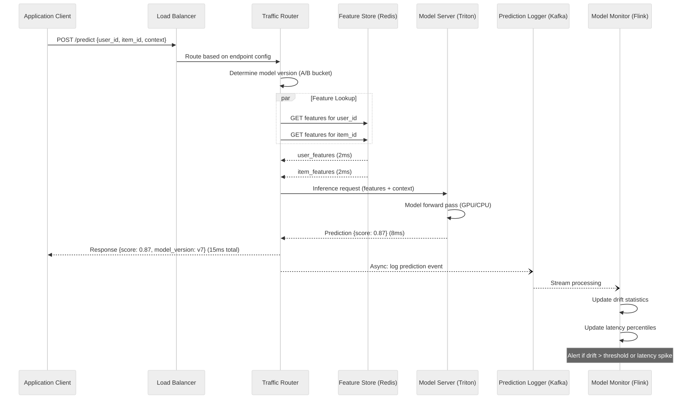
Training Pipeline End-to-End
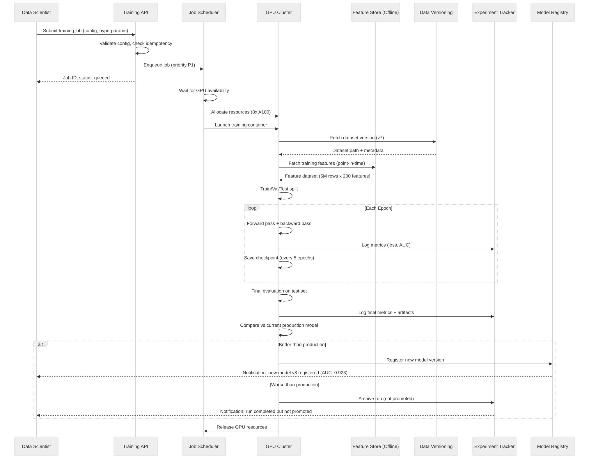
Model Deployment Canary Rollout
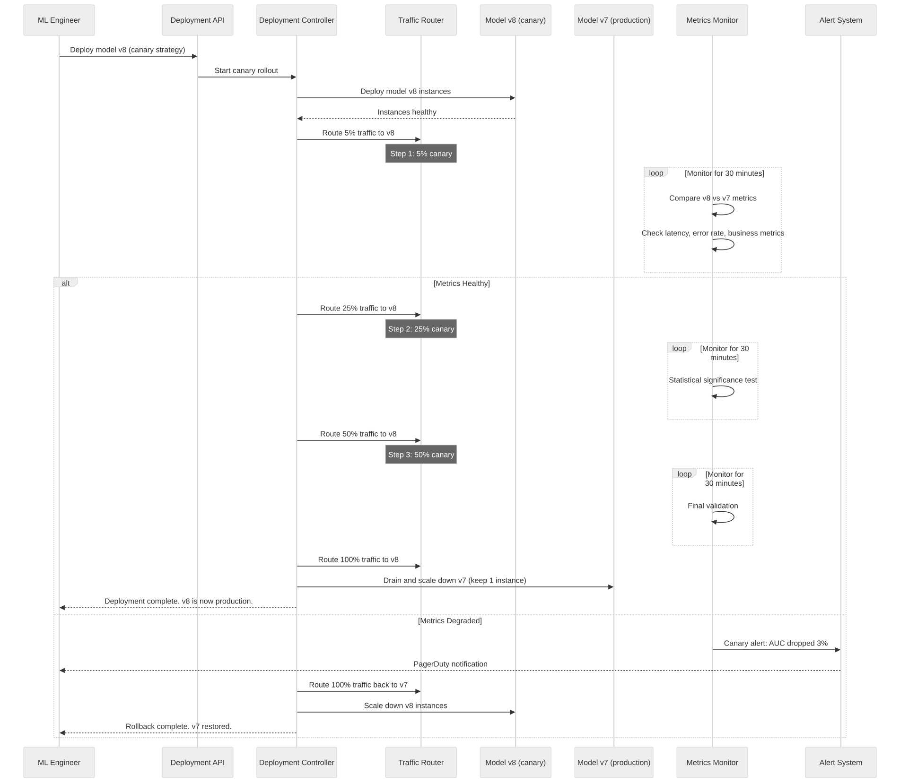
Active Learning Loop
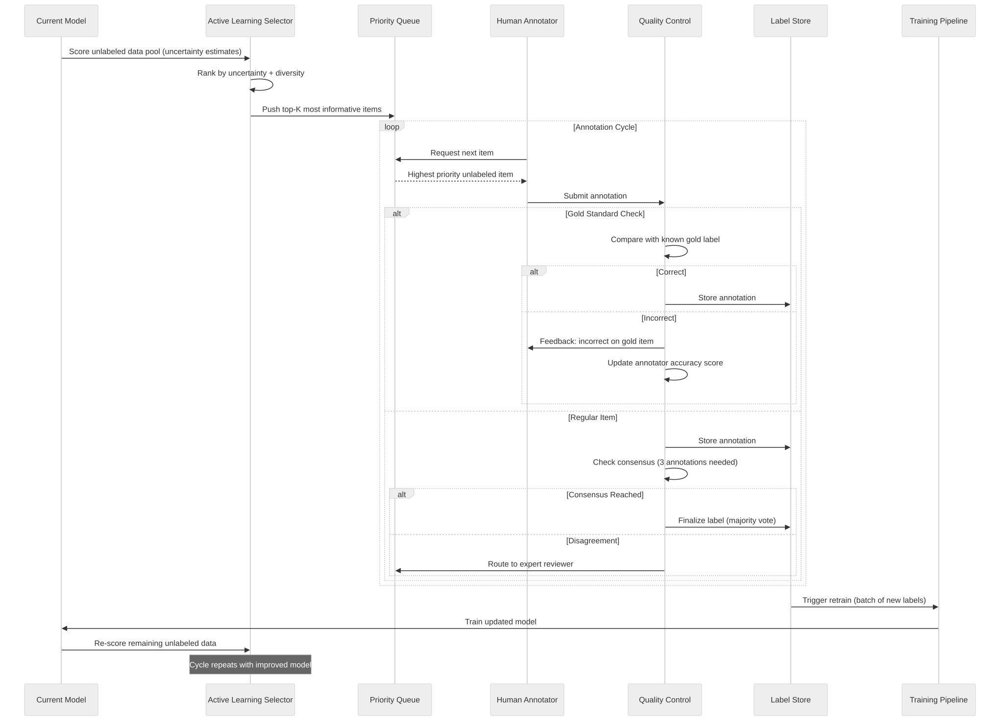
Fraud Scoring with Feedback
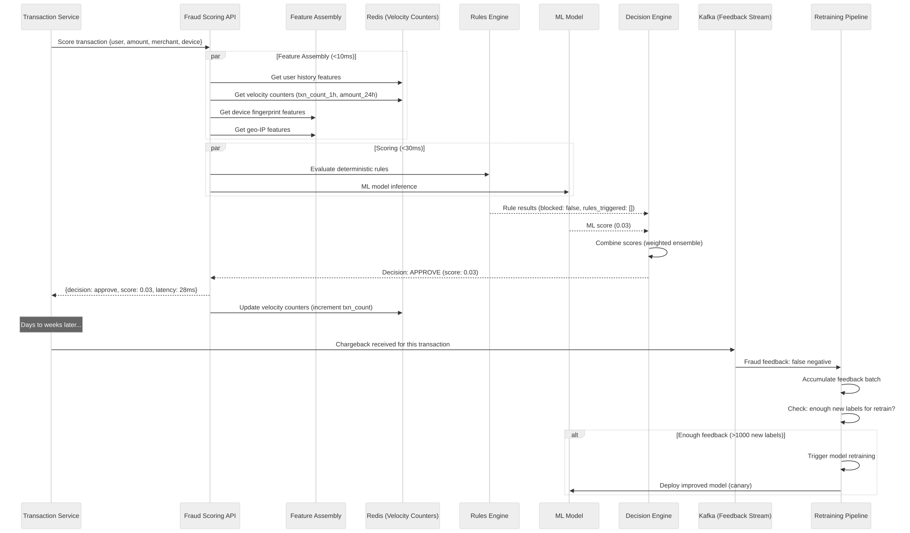
Concurrency Control
GPU Scheduling
Problem: Multiple teams compete for limited GPU resources.
N teams, M GPUs, each job needs 1-64 GPUs, jobs run minutes to days.
Scheduling Algorithm (Dominant Resource Fairness + Preemption):
1. Fair-share allocation:
- Each team gets guaranteed share: team_gpu_quota = total_GPUs * team_weight
- Example: Team A (40%), Team B (30%), Team C (30%) of 100 GPUs
- Team A guaranteed 40 GPUs, Team B 30, Team C 30
2. Burst capacity:
- If Team A only uses 20 GPUs, remaining 20 available for others
- Burst jobs run at lower priority, can be preempted
3. Preemption rules:
- P0 (production retrain) preempts P2 (exploration) but NOT P1 (experiment)
- Preempted jobs receive SIGTERM, have 60 seconds to checkpoint
- After checkpoint, job is re-queued with saved state
4. Gang scheduling:
- Multi-GPU jobs must be scheduled atomically (all GPUs or none)
- Prevents deadlock where Job A holds 4 of 8 needed GPUs, Job B holds other 4
- Use bin-packing: prefer to fill nodes before spreading across nodes
5. Affinity rules:
- GPUs within same node preferred (NVLink for fast interconnect)
- For model parallelism: require same-node GPUs (mandatory)
- For data parallelism: same-rack preferred (network bandwidth)
Experiment Deduplication
Problem: Data scientist accidentally submits identical experiment twice.
Solution: Idempotency key based on experiment configuration hash.
Dedup key computation:
idempotency_key = SHA256(
experiment_id +
dataset_version_id +
feature_view_ref +
sorted(hyperparameters) +
model_config_hash
)
Behavior:
1. On job submission, compute idempotency_key
2. Check training_jobs table for existing key:
- If found AND status in (running, succeeded): return existing job_id
- If found AND status is failed: allow resubmission (new attempt)
- If not found: create new job
3. Database enforces uniqueness via partial unique index
(excludes failed jobs to allow retries)
Edge case: Same hyperparameters but different random seed
- Random seed is included in hyperparameter hash
- Different seeds = different idempotency keys = allowed
Feature Compute Exactly-Once
Problem: Streaming feature computation must be exactly-once to avoid
double-counting (e.g., velocity counter incremented twice for same event).
Solution: Flink checkpointing + idempotent sinks
Flink exactly-once pipeline:
1. Source: Kafka consumer with committed offsets
2. Processing: Stateful window aggregations with Flink state backend (RocksDB)
3. Checkpointing: Every 60 seconds, snapshot state + Kafka offsets atomically
4. Sink: Redis SETEX (idempotent: same key+value is safe to replay)
For velocity counters (non-idempotent, increment-based):
Problem: INCR is not idempotent
Solution: Use event deduplication
1. Each event has unique event_id
2. Before processing, check: event_id in processed_events set?
3. If yes, skip (duplicate)
4. If no, process and add to processed_events set (TTL: 1 hour)
5. processed_events stored in Flink state (checkpointed)
Alternative for counters: Use "replace" instead of "increment"
- Compute full window aggregate in Flink state
- Write final value to Redis (SETEX, idempotent)
- More memory in Flink, but guaranteed correctness
Idempotency Strategy
Prediction Deduplication
Problem: Client retries due to timeout may cause duplicate predictions,
leading to duplicate downstream actions (e.g., double fraud block).
Solution: Request-ID based deduplication
Implementation:
1. Client includes X-Request-ID header (UUID)
2. Model serving gateway checks Redis for existing response:
Key: pred_dedup:{request_id}
TTL: 5 minutes
3. If cache hit: return cached response immediately (no model inference)
4. If cache miss: run inference, cache response, return to client
5. For batch predictions:
- Idempotency at batch job level: batch_job_id
- If batch job with same ID already completed, return existing results
- If batch job with same ID is running, return status (no re-submission)
Cost: One additional Redis lookup per request (~0.5ms)
Redis memory: 1M requests/5min x 200 bytes = 200 MB (negligible)
Training Job Restart Idempotency
Problem: Training job fails and restarts. Must not re-process already-processed data
or lose completed checkpoints.
Solution: Checkpoint-based resume with idempotent data loading
1. Checkpoint contract:
- Every N epochs, save: model weights, optimizer state, data loader position, epoch number
- Checkpoint path includes run_id and epoch: s3://checkpoints/{run_id}/epoch-{N}/
- On restart, find latest checkpoint: SELECT MAX(epoch) FROM checkpoints WHERE run_id = ?
2. Data loader position:
- Deterministic shuffling with fixed seed + epoch number
- Resume from exact batch position within epoch
- For streaming data: checkpoint Kafka consumer offset
3. Metric logging idempotency:
- Metrics keyed by (run_id, epoch, step)
- Re-logging same metric is safe (overwrite with same value)
- MLflow handles duplicate metric writes gracefully
4. Model registration idempotency:
- Registration keyed by (model_name, content_hash)
- If model with same hash already registered, return existing version
- Prevents duplicate model versions from retry
Consistency Model
Feature Store Consistency
Online Store (Redis):
Consistency: Eventual consistency with bounded staleness
Write path:
Batch: Spark job completes → bulk write to Redis → atomic key swap
Stream: Flink processes event → write to Redis (per-key sequential)
Staleness guarantee:
- Streaming features: < 1 minute (Flink processing + Redis write)
- Batch features: < freshness_sla (typically 1 hour)
- Feature freshness tracked in metadata; stale features flagged in response
Read-after-write:
- Same partition/shard: guaranteed (Redis is single-threaded per shard)
- Cross-shard: not guaranteed (but irrelevant; features are per-entity)
Conflict resolution:
- Last-write-wins (timestamp-based)
- Streaming updates overwrite batch values (streaming is fresher)
Offline Store (S3/Iceberg):
Consistency: Strong consistency via Iceberg snapshot isolation
- Each materialization creates a new Iceberg snapshot
- Training reads from a specific snapshot (immutable)
- Concurrent materializations use optimistic concurrency (Iceberg conflict detection)
- Point-in-time queries guaranteed correct (Iceberg time-travel)
Model Version Consistency
Problem: During canary deployment, different serving replicas may have
different model versions loaded, causing inconsistent predictions.
Consistency guarantees:
1. Per-request consistency:
- Traffic router determines model version ONCE per request
- All feature lookups + inference use the same model version
- Response includes model_version for client-side consistency
2. Session consistency (for A/B tests):
- User assigned to bucket via deterministic hash: bucket = hash(user_id + test_id) % 100
- Same user always gets same model version for duration of test
- No session affinity at infrastructure level; routing is stateless
3. Deployment atomicity:
- New model version deployed to ALL replicas before receiving any traffic
- Health check confirms model loaded and warm before routing traffic
- If any replica fails to load, deployment is rolled back for that step
4. Rollback consistency:
- Rollback reverts traffic routing (not model unloading)
- Old model stays loaded on all replicas for instant rollback
- Only decommissioned after new model is stable (typically 24 hours)
Distributed Transaction / Saga Design
Model Deployment Saga
The model deployment process involves multiple services that must be coordinated.
A failure at any step requires compensating actions to restore the previous state.
Saga Steps:
Step 1: Validate Model
Action: Load model artifact, verify checksum, run sanity inference
Compensate: No-op (read-only step)
Step 2: Deploy Model Instances
Action: Launch new model server instances, load model weights, run warm-up
Compensate: Terminate new instances, release GPU resources
Step 3: Register in Service Discovery
Action: Register new instances in load balancer / service mesh
Compensate: Deregister new instances
Step 4: Update Traffic Routing
Action: Route canary % to new model version
Compensate: Route 100% back to old model version
Step 5: Monitor Canary Metrics
Action: Collect and compare metrics for configured duration
Compensate: Route 100% back to old model (automatic rollback)
Step 6: Promote to Full Traffic
Action: Gradually increase traffic to 100%
Compensate: Revert to canary % or rollback fully
Step 7: Drain Old Version
Action: Scale down old model instances (keep 1 for emergency rollback)
Compensate: Scale up old instances, revert routing
Saga Orchestrator:
- Deployment Controller (stateful service) manages saga state
- State persisted in PostgreSQL (deployment_configs table)
- Each step has timeout (Step 5: 30 min, others: 5 min)
- On timeout: execute compensating actions in reverse order
- Saga can be paused/resumed by ML engineer
Training Pipeline Orchestration
Training pipeline is a DAG of dependent steps, orchestrated by Airflow or custom orchestrator.
DAG Steps:
1. Data Validation
- Verify dataset version exists and is accessible
- Check schema compatibility with feature view
- Validate data quality (nulls, distributions)
Failure: Abort pipeline, notify data scientist
2. Feature Retrieval
- Fetch offline features with point-in-time correctness
- Join with labels
- Create train/val/test splits
Failure: Retry 3x, then abort
3. Training
- Submit GPU job to training cluster
- Monitor progress via checkpoints
Failure: Resume from checkpoint (up to 3 restarts)
4. Evaluation
- Run model on test set
- Compute metrics (AUC, precision, recall, etc.)
- Compare against current production model
Failure: Retry 1x, then archive run
5. Model Registration (conditional)
- Register model in registry IF metrics exceed threshold
- Record lineage (dataset version → features → model)
Failure: Retry registration; model artifact already in S3
6. Notification
- Notify data scientist of results
- Update experiment dashboard
Failure: Non-critical; log and continue
Orchestration pattern: Choreography (each step emits event for next step)
via Kafka topics: ml.pipeline.data_validated, ml.pipeline.features_ready,
ml.pipeline.training_complete, ml.pipeline.evaluation_complete
Why not a central orchestrator for training?
- Training jobs are long-running (hours); central orchestrator would need
persistent state and fault tolerance
- Event-driven choreography allows each step to be independently scalable
- Airflow DAG provides the overall schedule; Kafka provides step-to-step triggering
Security Design
Model Access Control
Role-Based Access Control (RBAC):
Roles:
ml-viewer: View experiments, models, metrics (read-only)
ml-engineer: Submit training jobs, register models, manage features
ml-admin: Deploy models to production, manage endpoints, configure A/B tests
ml-platform: Manage infrastructure, GPU quotas, cluster config
data-labeler: View and submit annotations (no model access)
Resource-level permissions:
- Experiments: team-scoped (team members can view/edit)
- Models: team-scoped for training; deployment requires ml-admin
- Feature views: team-scoped for creation; cross-team read via sharing
- Endpoints: environment-scoped (staging vs production)
- Training data: dataset-level ACL (sensitive data restricted)
API authentication:
- Service-to-service: mTLS + JWT (short-lived tokens from identity provider)
- User-facing: OAuth 2.0 + RBAC
- Model serving endpoints: API key + rate limiting per client
Audit logging:
- All model deployments logged with deployer, approver, version
- All training jobs logged with data accessed, GPU resources used
- All feature accesses logged for compliance (who accessed what data)
Data Privacy
Differential Privacy:
- Add calibrated noise to training gradients (DP-SGD)
- Privacy budget (epsilon): track cumulative privacy loss across training runs
- Target: epsilon < 10 for user-level privacy guarantee
- Implementation: Use Opacus (PyTorch) or TF Privacy
Training with DP-SGD:
1. Clip per-sample gradients to bound sensitivity
2. Add Gaussian noise proportional to sensitivity
3. Track privacy budget via Renyi divergence accountant
4. Stop training if budget exhausted
Federated Learning:
- Train personalization models on-device (mobile)
- Aggregate model updates (not raw data) on server
- Secure aggregation: server cannot see individual updates
- Use case: keyboard prediction, on-device ranking
Architecture:
1. Server sends global model to devices
2. Devices train locally on user data (stays on device)
3. Devices send encrypted model updates to server
4. Server aggregates updates via secure aggregation protocol
5. Updated global model sent to devices
PII Handling:
- Features derived from PII are hashed or tokenized before storage
- Raw PII never stored in feature store or model artifacts
- Training data anonymized: user_id → hashed_user_id
- GDPR right-to-be-forgotten: delete user from feature store + retrain model excluding user
- Data retention: feature store online (TTL-based), offline (policy-based deletion)
Model Extraction Defense
Threat: Attacker queries model API repeatedly to reverse-engineer the model.
Defenses:
1. Rate limiting: Per-API-key rate limits (10K requests/day for external)
2. Query logging: Monitor for extraction patterns (systematic input probing)
3. Output perturbation: Add small random noise to prediction scores
(preserves ranking but degrades extraction quality)
4. Watermarking: Embed unique watermarks in model outputs that can prove ownership
5. Confidence score suppression: Return only top-K labels, not full probability distribution
6. CAPTCHA / proof-of-work: For public-facing APIs, require human verification for high-volume usage
Detection:
- Alert on: >1000 sequential requests from same IP
- Alert on: Systematic input variation patterns (grid-like feature probing)
- Alert on: Unusual query distribution (uniform vs. natural)
Observability Design
Model Monitoring
Three pillars of ML observability:
1. Data Quality Monitoring (input)
Metrics:
- Feature null rate (per feature, per time window)
- Feature distribution shift (KL divergence, PSI, KS test)
- Feature range violations (out-of-expected-bounds)
- Feature correlation changes
Alerting:
- Null rate > 5% for any feature: P1 alert
- PSI > 0.2 for any feature: P2 alert (moderate drift)
- PSI > 0.5 for any feature: P1 alert (severe drift)
Dashboard:
- Feature distribution histograms (current vs. training)
- Time series of feature statistics
- Feature correlation heatmap
2. Model Performance Monitoring (output)
Online metrics (real-time):
- Prediction distribution (score histogram, class distribution)
- Prediction latency (p50, p95, p99)
- Error rate (4xx, 5xx)
- Throughput (RPS)
Offline metrics (batch, delayed ground truth):
- AUC, precision, recall, F1 (computed when labels available)
- Metric trend over time (weekly rolling window)
- Per-segment metrics (by user cohort, by device, by geography)
Drift detection:
- Score distribution shift: compare current hour vs. training time
- Concept drift: monitor correlation between predictions and outcomes
- Alert: AUC drops > 2% over 7-day rolling window
3. Infrastructure Monitoring (system)
Metrics:
- GPU utilization, memory usage, temperature
- Model server replica count, health check status
- Feature store latency (online read latency, materialization lag)
- Kafka consumer lag (prediction logging, feature streaming)
Alerting:
- GPU utilization < 10% for 30 min: potential underutilization
- Feature store latency p99 > 10ms: performance degradation
- Kafka lag > 100K messages: pipeline falling behind
Data Quality Monitoring
Pipeline:
1. Raw data arrives in data lake (S3)
2. Great Expectations validates against defined expectations:
- Schema validation (columns present, types correct)
- Completeness (null rate per column < threshold)
- Freshness (data no older than SLA)
- Volume (row count within expected range ± 20%)
- Distribution (per-column stats within expected bounds)
3. Results stored in data quality table
4. Failures block downstream pipelines (training, feature computation)
Expectations example:
Dataset: product_interactions v7
Checks:
- user_id: not null, string format
- event_type: in ['view', 'click', 'purchase', 'add_to_cart', 'skip']
- timestamp: not null, within last 90 days, no future timestamps
- row_count: between 120M and 180M (based on historical trend)
- user_id cardinality: between 4M and 6M
Training Metrics Observability
Experiment Tracking Dashboard (MLflow / W&B):
- Training loss curve (per epoch)
- Validation loss and metrics (per epoch)
- Learning rate schedule
- GPU utilization timeline
- Memory usage timeline
- Gradient norm (detect exploding/vanishing gradients)
- Feature importance ranking
Aggregate Training Metrics:
- Training jobs per day (by team, by priority)
- Average GPU utilization across cluster
- Queue wait time distribution
- Job success rate (target > 90%)
- Average training duration by model type
- GPU cost per model (utilization x duration x $/GPU-hour)
Alerts:
- Training job running > max_runtime: kill and notify
- Loss is NaN: kill job immediately, notify
- GPU utilization < 20% for running job: potential code issue
- Validation loss increasing for 5+ epochs: potential overfitting (informational)
Reliability and Resilience
Model Fallback Chains
When primary model is unavailable, degrade gracefully through a fallback chain.
Fallback chain (fraud scoring):
1. Primary: Deep learning ensemble (best accuracy)
↓ timeout after 50ms or error
2. Secondary: XGBoost model (good accuracy, faster)
↓ timeout after 30ms or error
3. Tertiary: Rules engine only (deterministic, always available)
↓ if rules engine fails
4. Default: CHALLENGE all transactions (manual review)
Fallback chain (recommendations):
1. Primary: Personalized deep learning ranker
↓ timeout or error
2. Secondary: Collaborative filtering (precomputed)
↓ timeout or error
3. Tertiary: Popularity-based (precomputed, cached in CDN)
↓ timeout or error
4. Default: Editorial picks (static list, always available)
Implementation:
- Circuit breaker per model endpoint (open after 5 failures in 10s)
- Fallback selection latency < 1ms (in-memory config lookup)
- Metrics: track fallback rate per model (target < 0.1%)
- Alert if fallback rate > 1% for any model
Graceful Degradation
Feature store degradation:
- If online store (Redis) is slow (> 10ms) or unavailable:
1. Serve from L1 cache (in-process, stale up to 60s) — best option
2. Use feature defaults (per-feature default values) — acceptable
3. Skip optional features, use only required features — reduced accuracy
4. Return fallback prediction (popularity, rules-based) — last resort
- If offline store is unavailable during training:
1. Retry with exponential backoff (up to 30 minutes)
2. Use cached feature dataset from previous materialization
3. Pause training job (don't fail) and alert
Model serving degradation:
- Under heavy load:
1. Autoscale up to max_replicas
2. Enable adaptive batching (batch more requests per inference)
3. Switch to lighter model (quantized, pruned)
4. Shed traffic (return 503 with Retry-After header)
- GPU failure:
1. Kubernetes reschedules pod to healthy node
2. Model loaded from cache (local SSD) or downloaded from S3
3. Health check ensures model is ready before receiving traffic
4. If all GPU nodes down: fall back to CPU inference (higher latency, lower throughput)
Stale Feature Handling
Problem: Feature materialization is delayed, so features served are stale.
Detection:
- Each feature value includes event_timestamp (when computed)
- Feature store response includes stale_features list
- Monitoring tracks: feature_staleness_seconds = NOW() - event_timestamp
Handling strategies:
1. Serve stale features with warning (most common)
- Include staleness metadata in response
- Model trained with stale feature augmentation (intentionally train on stale features)
- Acceptable if staleness < 2x freshness_SLA
2. Use default values for very stale features (staleness > 2x SLA)
- Default values defined per feature in feature_definitions table
- Typically: 0 for counts, global mean for continuous, 'unknown' for categorical
3. Recompute on-the-fly for critical features
- On-demand feature computation for features with < 10ms compute time
- Example: user_age (from birth_date) — trivial to compute real-time
- Not practical for aggregation features (e.g., purchase_count_30d)
4. Block request if critical features are stale beyond hard threshold
- Only for highest-criticality models (fraud detection)
- Return 503 with reason: "Feature store degraded"
- Extremely rare; indicates major infrastructure failure
Multi-Region and DR Strategy
Model Replication
Architecture: Active-Active across 3 regions (us-east-1, eu-west-1, ap-southeast-1)
Model Artifact Replication:
- Model registry (PostgreSQL): Primary in us-east-1, read replicas in other regions
- Model artifacts (S3): Cross-region replication enabled
- Replication lag: < 5 minutes for model artifacts, < 1 second for metadata
Model Serving per Region:
- Each region has independent model serving cluster
- Same model versions deployed to all regions (synchronized via deployment controller)
- Regional autoscaling based on local traffic patterns
Deployment coordination:
1. Deploy canary in primary region (us-east-1) first
2. If canary succeeds, deploy to other regions in parallel
3. Each region has independent canary evaluation
4. Rollback is per-region (one region can rollback independently)
Failover:
- If model serving in one region fails, DNS (Route 53) routes to nearest healthy region
- Failover time: < 60 seconds (health check interval + DNS propagation)
- Cross-region latency penalty: ~50-100ms (acceptable for non-real-time models)
Feature Store Geo-Distribution
Online Store (Redis):
Strategy: Independent Redis clusters per region, synchronized via feature materialization
Option A — Replicated writes (simple):
- Flink/Spark writes features to Redis in ALL regions
- Pros: Simple, low read latency, no cross-region dependency
- Cons: 3x write cost, features may be slightly inconsistent across regions
Option B — Primary with cross-region replication:
- Features computed and written to primary region Redis
- Redis Cross-Region Replication to other regions
- Pros: Single write, strong consistency
- Cons: Replication lag (50-100ms), primary dependency
Recommendation: Option A (replicated writes) for production
- Features are recomputed, not replicated — no consistency issues
- Each region's Flink job reads from local Kafka mirror/replica
- Eliminates cross-region dependency for online serving
Offline Store (S3/Iceberg):
Strategy: Single offline store in primary region
- Training always runs in primary region (co-located with data)
- S3 cross-region replication for DR only (not for serving)
- If primary region fails, training paused until recovered
(training is not latency-sensitive; hours of delay acceptable)
Disaster Recovery Playbook
Scenario 1: Single region failure
Impact: ~33% of inference traffic affected
Recovery:
1. Automatic: DNS failover to remaining regions (< 60s)
2. Autoscale: Remaining regions scale up to absorb traffic (< 5 min)
3. Monitoring: Verify inference latency and error rates in remaining regions
RTO: < 2 minutes | RPO: 0 (stateless inference)
Scenario 2: Model serving cluster failure (all replicas in region)
Impact: 100% of region's inference traffic
Recovery:
1. Kubernetes restarts pods on healthy nodes (< 30s per pod)
2. If node pool exhausted, new nodes provisioned (< 5 min)
3. Model loaded from local cache or S3 (< 2 min)
4. During recovery: DNS failover to other regions
RTO: < 5 minutes | RPO: 0
Scenario 3: Feature store (Redis) failure
Impact: Models serve with stale or default features
Recovery:
1. Redis Cluster auto-failover (replica promoted, < 30s)
2. If full cluster lost, rebuild from offline store (< 30 min)
3. During recovery: serve with L1 cache + defaults
RTO: < 30 seconds (failover) to 30 minutes (full rebuild) | RPO: < 1 minute
Scenario 4: Training cluster failure
Impact: Training jobs fail, no new models deployed
Recovery:
1. Resume failed jobs from checkpoints in other region/cluster
2. Model serving unaffected (production models already deployed)
3. No customer impact; ML team impact only
RTO: < 1 hour | RPO: Last checkpoint (typically < 30 min of training)
Scenario 5: Kafka cluster failure
Impact: Prediction logging and feature streaming delayed
Recovery:
1. Kafka MirrorMaker 2 in standby region takes over
2. Prediction logging buffer in application (5 min in-memory)
3. Feature streaming paused; online features stale but still served
RTO: < 10 minutes | RPO: < 5 minutes of events
Cost Drivers and Optimization
GPU Cost Optimization
GPU costs dominate ML infrastructure spend (60-80% of total).
Strategy 1: Spot/Preemptible Instances
Savings: 60-70% vs. on-demand
Use for: Training jobs (checkpointable), HP search, batch predictions
NOT for: Real-time inference (availability requirements too high)
Implementation:
- Training jobs: checkpoint every 10 minutes; resume on preemption
- HP search: run on spot; if preempted, reschedule trial
- Batch predictions: partition work; resume from last partition
- Mix: 70% spot + 30% on-demand (for P0 production retraining)
Strategy 2: Mixed Precision Training (FP16/BF16)
Savings: 2x training throughput (same GPUs, half the time)
Use for: All deep learning training
Implementation:
- PyTorch AMP (Automatic Mixed Precision): 3 lines of code change
- Forward pass in FP16, gradient accumulation in FP32
- Loss scaling to prevent gradient underflow
- Accuracy impact: typically < 0.1% degradation
Strategy 3: Right-sizing GPU allocation
Problem: ML engineers request 8 A100s; actual utilization is 40%
Solution:
- Monitor GPU utilization per job (DCGM metrics)
- Right-sizing recommendation engine:
If avg utilization < 50% for 3+ jobs: suggest smaller allocation
- Fractional GPU support (MIG for A100, MPS for older GPUs)
- Auto-scaling training: start small, scale up if GPU utilization > 80%
Strategy 4: GPU Sharing / Time-Slicing
- Multiple small models on same GPU (< 4 GB VRAM each)
- NVIDIA MPS (Multi-Process Service) for concurrent inference
- Typical: 3-5 small models per A100 (40 GB)
- Savings: 3-5x for small models
Cost Tracking:
Per-model GPU cost = GPU-hours x $/GPU-hour
Attribute to team via training job metadata
Monthly report: top 10 most expensive models, cost trend, optimization opportunities
Inference Cost Optimization
Strategy 1: Dynamic Batching
Combine multiple inference requests into a single GPU batch
Triton Inference Server configuration:
- max_batch_size: 64
- batching_window_ms: 5 (wait up to 5ms to fill batch)
- preferred_batch_size: [16, 32, 64]
Impact: 4-8x throughput improvement with < 5ms latency increase
Best for: GPU-based models with high throughput requirements
Strategy 2: Model Quantization
Reduce model precision from FP32 to INT8/INT4
Post-training quantization (no retraining):
- FP32 → INT8: 4x smaller, 2-3x faster, < 1% accuracy loss
- FP32 → INT4: 8x smaller, 3-5x faster, 1-3% accuracy loss
Quantization-aware training (QAT):
- Simulate quantization during training
- Better accuracy than post-training quantization
- Adds ~10% training time
Strategy 3: Model Distillation
Train a smaller "student" model to mimic a larger "teacher" model
Process:
1. Teacher model (BERT-large, 340M params) generates soft labels
2. Student model (DistilBERT, 66M params) trained on soft labels
3. Student achieves 97% of teacher accuracy at 6x inference speed
Use for: Deploy student model for real-time serving, teacher for batch
Strategy 4: Intelligent Routing
Route easy requests to small models, hard requests to large models
Implementation:
1. Difficulty estimator (small model, ~1ms) scores request difficulty
2. Easy requests (80%): route to small/quantized model ($)
3. Hard requests (20%): route to full model ($$$)
4. Result: 60% cost reduction with < 0.5% quality loss
Strategy 5: Request-Level Caching
Cache prediction results for repeated identical requests
(See Cache Strategy section above)
Cost comparison (per 1M predictions):
Full model (GPU): $5.00
Quantized (GPU): $1.50
Distilled (CPU): $0.50
Cached: $0.01
Deep Platform Comparisons
End-to-End ML Platform Comparison
| Dimension | Google (Vertex AI / TFX) | Meta (FBLearner / PyTorch) | Netflix (Metaflow) | Uber (Michelangelo) | Spotify | |
|---|---|---|---|---|---|---|
| Training Framework | TensorFlow (primary), JAX | PyTorch (primary) | PyTorch, scikit-learn | Mixed (TF, PyTorch, XGBoost) | TensorFlow, PyTorch | Custom (Pro-ML) |
| Orchestration | TFX Pipelines, Vertex Pipelines | FBLearner Flow | Metaflow + AWS Step Functions | Custom DAG engine | Luigi, then Flyte | Azkaban, then custom |
| Feature Store | Vertex Feature Store (managed) | Custom (F3, Feature Platform) | Custom | Michelangelo Feature Store | Custom (Feathr-like) | Feathr (open-sourced) |
| Experiment Tracking | Vertex Experiments | FBLearner built-in | Metaflow + custom | Michelangelo built-in | Custom | Custom |
| Model Serving | Vertex Prediction (TF Serving) | PyTorch Serving (TorchServe) | Custom (Java-based) | Custom DSP | TF Serving + custom | Custom |
| Hyperparameter Tuning | Vizier (Bayesian) | Ax (Bayesian) | Custom + Optuna | Custom Bayesian | Optuna | Custom |
| Key Innovation | Managed end-to-end, Gemini integration | Scale (trillions of predictions/day) | Human-centric UX for DS | Real-time features + serving | Multi-objective reco | Feathr feature store |
| Scale | 10K+ models | 100K+ models | 1K+ models | 10K+ models | 5K+ models | 10K+ models |
| Open Source | TFX, Feast (contrib) | PyTorch, Ax, Hydra | Metaflow | None (proprietary) | Backstage (platform) | Feathr |
Training Infrastructure: SageMaker vs Vertex AI vs Custom K8s + Ray
| Dimension | AWS SageMaker | Google Vertex AI | Custom K8s + Ray |
|---|---|---|---|
| Ease of setup | High (fully managed) | High (fully managed) | Low (significant ops work) |
| Framework support | TF, PyTorch, XGBoost, sklearn, custom | TF, PyTorch, JAX, custom | Any (full control) |
| Distributed training | Built-in (data parallel, model parallel) | Built-in (data parallel, model parallel) | Ray Train + DeepSpeed + custom |
| GPU management | Automatic provisioning | Automatic provisioning | Manual node pool management |
| Cost | $$$ (managed premium) | $$$ (managed premium) | $-$$ (spot instances, but ops cost) |
| Customization | Medium (managed constraints) | Medium (managed constraints) | Very High (full control) |
| Spot/Preemptible | Managed spot training | Preemptible VMs | Manual checkpointing required |
| HPO | Built-in (random, Bayesian) | Vizier (SOTA Bayesian) | Optuna, Ray Tune |
| Experiment tracking | SageMaker Experiments | Vertex Experiments | MLflow, W&B |
| Multi-cloud | AWS only | GCP only | Any cloud + on-prem |
| Best for | AWS shops, small ML teams | GCP shops, Gemini integration | Large ML teams, custom needs |
Serving: Triton vs TF Serving vs vLLM vs Custom
| Dimension | NVIDIA Triton | TF Serving | vLLM | Custom (FastAPI + ONNX) |
|---|---|---|---|---|
| Frameworks | TF, PyTorch, ONNX, TensorRT, custom | TensorFlow only | Any LLM (HF, custom) | ONNX (any framework via export) |
| GPU optimization | Excellent (TensorRT, dynamic batching) | Good (TF GPU ops) | Excellent (PagedAttention, continuous batching) | Manual (ONNX Runtime CUDA EP) |
| Dynamic batching | Built-in, highly configurable | Built-in | Continuous batching (LLM-optimized) | Manual implementation |
| Model ensemble | Built-in (pipeline, ensemble) | No | No | Manual |
| Latency (p99) | < 10ms (GPU models) | < 15ms (TF GPU) | < 200ms TTFT (LLMs) | < 20ms (depends on model) |
| Throughput | Very high (5-10K RPS/GPU) | High (3-5K RPS/GPU) | 500-2K tokens/s/GPU | Medium (1-3K RPS/GPU) |
| Complexity | Medium (config-heavy) | Low (simple for TF) | Low (simple for LLMs) | Low (full control) |
| Best for | Multi-framework, GPU-heavy | TF-only shops | LLM serving | Simple models, edge |
Feature Stores: Feast vs Tecton vs Hopsworks vs Custom
| Dimension | Feast (OSS) | Tecton | Hopsworks | Custom |
|---|---|---|---|---|
| License | Apache 2.0 | Commercial | AGPL / Commercial | N/A |
| Cost | Free (self-managed) | $$$ | $$ | Engineering time |
| Online store backends | Redis, DynamoDB, BigTable | Managed (DynamoDB) | RonDB (custom MySQL NDB) | Redis, DynamoDB (custom) |
| Offline store backends | BigQuery, Redshift, S3 | Managed (Spark + S3) | Hive/S3 | S3, Iceberg (custom) |
| Streaming features | Flink/Spark (user-managed) | Built-in (managed Flink) | Built-in | Flink (self-managed) |
| Point-in-time joins | Built-in | Built-in | Built-in | Manual implementation |
| Feature registry | Basic UI | Advanced UI + monitoring | Advanced UI + monitoring | Custom |
| Data quality | Basic validation | Built-in monitoring + alerting | Built-in monitoring | Great Expectations (custom) |
| Scale | Tested to 10K features, 100M entities | Enterprise scale | Enterprise scale | Unlimited (depends on implementation) |
| Best for | Small-medium teams, OSS preference | Enterprise, managed preference | Existing Hopsworks users | Large teams, custom requirements |
Edge Cases and Failure Scenarios
Edge Case 1: Training-Serving Skew Causing Silent Accuracy Degradation
Scenario:
Training pipeline normalizes user_age feature as (age - mean) / std using
training data statistics (mean=35, std=12).
Serving pipeline uses different normalization (mean=33, std=10) because
it was computed from a different data sample.
Impact:
Model accuracy drops 2-5% silently. No error, no alert.
Revenue impact: $500K/month for recommendation model.
Detection:
- Feature distribution monitoring compares training vs. serving distributions
- PSI (Population Stability Index) > 0.2 triggers alert
- Periodic offline evaluation on fresh data catches accuracy degradation
Prevention:
- Feature Store enforces same transformation logic for training and serving
- Feature transformation defined ONCE in feature view, applied everywhere
- Integration test: compute features in both paths, compare values
- Automated training-serving skew test in CI/CD pipeline
Edge Case 2: Model Drift After Major World Event
Scenario:
Fraud detection model trained on 2024 data. COVID-style event in 2025 causes:
- Travel spending drops 80%
- Online spending surges 300%
- New merchant categories emerge (telehealth, remote work tools)
Model flags legitimate online purchases as fraud (false positive rate 5x normal).
Impact:
$2M/day in blocked legitimate transactions.
Detection:
- Fraud score distribution shifts dramatically (median score increases 40%)
- False positive rate spikes (from human review feedback)
- Rule: "If fraud_block_rate > 2x baseline for 2 hours, P0 alert"
Response:
1. Immediate: Increase challenge threshold (more lenient, fewer blocks)
2. Short-term (hours): Deploy rules override for affected patterns
3. Medium-term (days): Retrain model with recent data
4. Long-term: Build event-detection system that triggers emergency retraining
Prevention:
- Diverse training data (include historical crisis periods)
- Monitoring dashboards with business context (transaction volumes by category)
- Pre-built emergency response playbook
Edge Case 3: GPU OOM During Distributed Training
Scenario:
8-GPU training job runs fine for 10 epochs. At epoch 11, a data batch contains
unusually long text sequences (>512 tokens), causing GPU memory to spike
and OOM error on GPU 3.
Impact:
Entire distributed training job fails. 10 epochs of training lost if no checkpoints.
Detection:
- CUDA OOM error logged
- GPU memory utilization monitoring shows spike before crash
- Training job status: FAILED with OOM error
Response:
1. Resume from last checkpoint (epoch 10)
2. Enable gradient checkpointing (trade compute for memory)
3. Add dynamic padding with max_length cap
4. Enable gradient accumulation (smaller effective batch per GPU)
Prevention:
- Always enable checkpointing (every epoch minimum)
- Set max sequence length in data loader
- Monitor GPU memory utilization; alert at 90%
- Test with a few batches of max-size inputs before full training
- Use torch.cuda.max_memory_allocated() to profile peak memory
Edge Case 4: Feature Store Stale Data from Pipeline Delay
Scenario:
Flink streaming feature pipeline processes user events to compute
velocity features (purchase_count_1h). Pipeline experiences 30-minute delay
due to Kafka consumer lag from a burst of events.
Fraud model uses stale velocity counters: user who made 15 purchases
in last hour appears to have made only 5 (30 min behind).
Impact:
Fraud model under-scores risky transactions. Estimated $200K in missed fraud.
Detection:
- Feature freshness monitoring: event_timestamp lag > SLA (1 minute)
- Kafka consumer lag monitoring: alert when lag > threshold
- Feature store response includes staleness metadata
Response:
1. Alert triggers P1 page for ML platform team
2. Auto-switch to "defensive mode": lower fraud approval threshold
3. Investigate Flink pipeline: scale up parallelism if throughput issue
4. If pipeline irrecoverable: failover to batch-computed features (hourly)
Prevention:
- Flink autoscaling based on consumer lag
- Feature store marks stale features in API response
- Model trained with stale feature simulation (augmentation during training)
- Dedicated capacity for feature streaming (separate from other Flink jobs)
Edge Case 5: Cold Start for New Users in Recommendations
Scenario:
New user signs up. No interaction history. Collaborative filtering has
no signal. Content-based model has no preference data. Personalized
recommendations are impossible.
Impact:
New user sees generic content; engagement drops 40% vs. returning users.
Poor first impression leads to lower 7-day retention.
Mitigation strategies:
1. Progressive enrichment:
- Sign-up: Show popularity-based + editorial picks
- First 3 interactions: Use content-based similarity
- First 10 interactions: Blend content-based + early CF signal
- 50+ interactions: Full personalized model
2. Onboarding quiz:
- Ask 3-5 preference questions during sign-up
- Map answers to preference vectors
- Generate initial user embedding from quiz responses
3. Transfer learning:
- Use demographic features (age, location) to find similar users
- Bootstrap with "average user in same segment" recommendations
4. Contextual signals:
- Referral source (what brought them here?)
- Device type (mobile users prefer different content)
- Time of day / day of week patterns from aggregate data
5. Exploration allocation:
- Dedicate higher exploration rate (30%) for new users
- Use Thompson sampling to quickly learn preferences
- Reduce exploration as confidence in user model grows
Edge Case 6: Adversarial Attacks on Fraud Model
Scenario:
Fraudsters discover that the fraud model is less suspicious of
transactions with specific patterns (e.g., amounts ending in .99,
transactions during business hours, from domestic IPs).
They modify their behavior to exploit these blind spots.
Impact:
Fraud losses increase 50% in the category the adversary targets.
Detection:
- Monitor fraud patterns by rule: new fraud patterns not matching known signatures
- Monitor model feature importance shifts
- Track fraud rate per feature value bucket (unusual patterns emerge)
Response:
1. Immediate: Add rules for detected adversarial patterns
2. Short-term: Retrain model with recent adversarial examples
3. Long-term: Adversarial training (simulate adversarial feature modifications)
Prevention:
- Ensemble models: harder to attack multiple models simultaneously
- Feature engineering: include features that are hard to manipulate
(account age, historical patterns, network graph features)
- Randomize decision boundary: add noise to threshold
- Red team exercises: internal fraud team tries to beat the model
- Monitor for systematic pattern changes in blocked vs. approved transactions
Edge Case 7: Label Noise from Low-Quality Annotators
Scenario:
Annotation task for product categorization. 20% of annotators are
rushing through items (avg 2 seconds per item vs. expected 8 seconds).
These annotators have 60% accuracy on gold standard items.
Noisy labels propagate to training data, degrading model accuracy.
Impact:
Model accuracy drops 3-5% due to label noise. Affects all downstream
models trained on this data.
Detection:
- Gold standard accuracy per annotator: flag anyone < 80%
- Annotation speed anomaly: flag anyone < 50% of expected time
- Inter-annotator agreement drops below threshold (kappa < 0.6)
Response:
1. Disable flagged annotators immediately
2. Review and discard annotations from flagged annotators
3. Re-annotate affected items with qualified annotators
4. Retrain model excluding noisy labels
Prevention:
- Gold standard items injected at 5-10% rate
- Real-time accuracy tracking with auto-disable at < 80%
- Qualification test before annotators can work on tasks
- Consensus labeling (3+ annotators) with majority vote
- Annotator skill tiers: new annotators start with easier tasks
Edge Case 8: Data Leakage in Time-Series Features
Scenario:
Feature "avg_purchase_amount_30d" is computed for training data.
Bug: the feature computation includes the label date itself.
For a label "will user purchase on March 15?", the feature includes
the March 15 purchase in the 30-day average.
Impact:
Model AUC is 0.95 in offline evaluation but 0.82 in production.
The 13-point gap is entirely due to data leakage.
Detection:
- Large gap between offline and online metrics (> 3% AUC difference)
- Suspiciously high offline performance (too good to be true)
- Feature importance analysis: leaked feature is top-1 by far
Prevention:
- Feature Store enforces point-in-time correctness:
Features computed with event_timestamp < label_timestamp (strictly before)
- Time-travel validation: for each training example, verify all features
were computed BEFORE the label timestamp
- Automated data leakage tests in training pipeline:
Train model with and without suspected features; if removal causes
massive accuracy drop, investigate for leakage
- Code review checklist: "Are all features point-in-time correct?"
Edge Case 9: Model Serving Latency Spike from Garbage Collection
Scenario:
Java-based model serving (TF Serving or custom JVM) experiences periodic
latency spikes every 5 minutes. p99 latency jumps from 15ms to 500ms
during GC pauses. Affects 0.1% of requests but violates SLA.
Impact:
SLA violation; 0.1% of users experience 500ms delay.
For fraud detection, 500ms delay causes transaction timeouts.
Detection:
- Latency percentile monitoring shows periodic spikes
- GC logs show long Stop-The-World pauses (> 100ms)
- Correlation between GC events and latency spikes
Fix:
1. Tune GC: Switch to ZGC or Shenandoah (low-pause GC)
2. Reduce heap allocation: Object pooling, off-heap memory for tensors
3. Pre-allocate inference buffers (avoid per-request allocation)
4. Switch to non-JVM serving: Triton (C++), vLLM (Python/C++)
5. Isolate hot path: Separate GC-heavy preprocessing from inference
Edge Case 10: Feature Dependency Chain Failure
Scenario:
Feature A depends on Feature B (user_segment), which depends on Feature C
(user_purchase_count). Feature C's batch computation fails at 2 AM.
Feature B cannot be computed. Feature A is stale.
20 downstream models depend on Feature A.
Impact:
All 20 models serve with stale features for Feature A.
Impact ranges from negligible (features that change slowly) to severe
(features that change hourly).
Detection:
- Feature materialization job failure alerts
- Feature dependency graph analysis shows blast radius
- Feature freshness monitoring for downstream features
Response:
1. Assess blast radius: which models are affected? how critical?
2. Serve stale features (with alert to model owners)
3. Fix root cause (Feature C computation)
4. Trigger cascade recomputation: C → B → A
Prevention:
- Feature dependency graph with blast radius analysis
- SLA tiering: P0 features have redundant computation paths
- Circuit breaker: if upstream feature fails, serve default + alert
- Daily dependency health check: ensure all chains are healthy
Edge Case 11: A/B Test Interference Between Concurrent Experiments
Scenario:
Experiment 1: Test new recommendation model (50% of users)
Experiment 2: Test new checkout UI (50% of users)
Both experiments affect purchase conversion rate.
25% of users are in BOTH experiments.
Conversion lift attributed to Experiment 1 may actually be caused by
Experiment 2's improved checkout UI.
Impact:
Incorrect A/B test conclusions; wrong model deployed to production.
Detection:
- Experiment interaction analysis: users in both experiments show
different lift than users in only one experiment
- Statistical test for interaction effects (factorial analysis)
Prevention:
- Experiment layering: orthogonal layers with independent randomization
Layer 1: Recommendation model experiments
Layer 2: UI experiments
Each user gets independent random assignment per layer
- Mutual exclusion: experiments that affect same metric cannot overlap
Enforced by experiment platform at experiment creation time
- Holdout: 10% of users in a global holdout (no experiments)
Provides clean baseline for all experiments
- Pre-experiment power analysis: ensure sample size is sufficient
even with concurrent experiment interaction
Edge Case 12: Embedding Index Corruption During Update
Scenario:
Nightly embedding index rebuild produces corrupt index due to NaN values
in 0.01% of item embeddings (caused by item with unusual features).
Hot-swap replaces production index with corrupt index.
ANN queries return incorrect nearest neighbors or crash.
Impact:
Recommendation quality drops severely. Users see irrelevant items.
If index crashes, recommendations fall back to popularity (degraded but functional).
Detection:
- Index validation (post-build, pre-swap):
- Query 1000 known items, verify nearest neighbors match expectations
- Check for NaN/Inf values in all embeddings
- Verify index size matches expected item count
- Production monitoring: recommendation diversity drops (same items repeated)
Prevention:
1. Pre-swap validation (mandatory):
- Query validation set (100 items with known neighbors)
- Recall@10 must be > 0.95 (compared to brute-force)
- No NaN/Inf check on all vectors before index build
- Item count within 5% of expected
2. Atomic swap with rollback:
- Keep previous index for 24 hours after swap
- If anomaly detected within 1 hour, auto-rollback to previous index
- Rollback time: < 30 seconds (pointer swap)
3. Data validation:
- Filter NaN/Inf embeddings before index build
- Replace with zero vector or exclude item from index
- Alert on items with invalid embeddings for investigation
LLM-Specific Infrastructure
LLM Serving Architecture
The rise of Large Language Models (GPT-4, Llama, Claude, Gemini) in 2024-2025
has created new infrastructure challenges distinct from traditional ML serving.
Key Differences from Traditional ML Serving:
- Model size: 7B-700B parameters (vs. ~1M for traditional models)
- Memory: 14-1400 GB VRAM (vs. < 1 GB for traditional models)
- Latency: 200ms-5s for generation (vs. < 30ms for traditional models)
- Cost: $0.001-0.03 per request (vs. $0.000005 for traditional models)
- Workload: Autoregressive generation (sequential token-by-token)
Architecture:
Client → API Gateway → Token Router → LLM Serving Cluster → Response Streamer
LLM Serving Frameworks:
vLLM:
- PagedAttention: KV cache stored in non-contiguous memory pages
- Continuous batching: new requests join batch between tokens
- 2-4x throughput vs. naive HuggingFace serving
- Support: Llama, Mistral, Qwen, Gemma, etc.
- Deployment: Kubernetes + NVIDIA GPUs
TensorRT-LLM (NVIDIA):
- Kernel fusion and quantization for NVIDIA GPUs
- INT4/INT8/FP8 quantization with minimal quality loss
- Flight (paged) attention for KV cache management
- 3-5x inference speedup vs. unoptimized
- Best for: NVIDIA GPU clusters, latency-critical applications
SGLang:
- RadixAttention for prefix caching
- Efficient for multi-turn conversations (shared prefix)
- Automatic KV cache reuse across requests with common prefixes
Serving Architecture Details:
1. Request arrives at API Gateway
2. Token Router assigns to GPU with available KV cache capacity
3. Prefill phase: process all input tokens in parallel (~100ms for 1000 tokens)
4. Decode phase: generate output tokens one-by-one (~30ms per token)
5. Response streamed back via SSE (Server-Sent Events)
Multi-GPU serving for large models:
- Tensor parallelism: split attention heads across GPUs (same node)
- Pipeline parallelism: split layers across GPUs (cross-node)
- 70B model: 2x A100 80GB (tensor parallel)
- 700B model: 8x H100 80GB (tensor parallel + pipeline parallel)
Autoscaling:
- Scale metric: pending_requests / active_gpus
- Target: < 5 pending requests per GPU
- Scale-up time: 3-5 minutes (model loading from cache)
- Pre-warm: keep N cold instances with model loaded for burst
RAG Pipeline Design
Retrieval-Augmented Generation (RAG) grounds LLM responses in factual
data by retrieving relevant documents before generation.
Architecture:
Query → Query Processor → Retriever → Reranker → Context Builder → LLM → Response
Components:
1. Document Ingestion Pipeline:
Raw Documents → Chunking → Embedding → Vector Store
Chunking strategies:
- Fixed-size (512 tokens) with overlap (50 tokens)
- Semantic chunking (split at paragraph/section boundaries)
- Recursive character splitting (fallback)
Embedding model: all-MiniLM-L6-v2 (384-dim, fast) or text-embedding-3-large (3072-dim, accurate)
Vector store: pgvector, Pinecone, Weaviate, or Qdrant
2. Query Processing:
- Query rewriting: LLM rephrases user query for better retrieval
- Query decomposition: complex query split into sub-queries
- HyDE (Hypothetical Document Embeddings): generate hypothetical answer, embed it, retrieve similar
3. Retrieval:
- Dense retrieval: embed query, ANN search in vector store (top 20)
- Sparse retrieval: BM25 keyword search (top 20)
- Hybrid: combine dense + sparse with reciprocal rank fusion
retrieval_results = RRF(dense_top20, sparse_top20, k=60)
4. Reranking:
- Cross-encoder reranker (e.g., ms-marco-MiniLM-L-12)
- Scores each (query, document) pair for relevance
- Select top 5-10 most relevant chunks
- Latency: ~50ms for 20 candidates
5. Context Building:
- Concatenate retrieved chunks into context window
- Include source citations (document ID, chunk position)
- Respect context window limit (e.g., 128K tokens for GPT-4)
- Priority: most relevant chunks first (in case of truncation)
6. Generation:
- System prompt: "Answer based on the following context. Cite sources."
- Context + user query → LLM → response with citations
- Streaming response back to user
Performance:
End-to-end latency: 500ms-3s (retrieval: 50ms, reranking: 50ms, LLM: 500ms-2s)
Accuracy: RAG typically improves factual accuracy from 60% to 85%+
Prompt Management System
As LLM-powered features proliferate, managing prompts becomes a
production engineering concern (not just a research activity).
Architecture:
Prompt Registry → Version Control → A/B Testing → Monitoring
1. Prompt Registry:
- Central store for all production prompts
- Schema: prompt_id, version, template, variables, model, created_by
- Variables: {{user_context}}, {{retrieved_documents}}, {{system_instructions}}
- Access control: team-scoped, with promotion workflow
2. Version Control:
- Every prompt change creates a new version
- Immutable versions (no editing, only new versions)
- Diff view between versions
- Rollback to any previous version
3. Prompt A/B Testing:
- Route % of traffic to new prompt version
- Measure: response quality (human eval), latency, cost, user satisfaction
- Statistical significance testing before promotion
4. Prompt Optimization:
- Track token count per prompt (cost driver)
- Compress prompts: remove redundant instructions
- Few-shot example selection: choose examples most similar to query
- Dynamic prompt construction based on user context
5. Monitoring:
- Response quality metrics (hallucination rate, relevance score)
- Token usage per prompt (input tokens + output tokens)
- Latency per prompt version
- Cost per prompt version
- Failure rate (refusals, errors, timeouts)
Data model:
prompts (prompt_id, name, description, owner_id, model_target)
prompt_versions (version_id, prompt_id, template, variables, version_number)
prompt_deployments (deployment_id, version_id, environment, traffic_pct)
prompt_evaluations (eval_id, version_id, metric, value, sample_size)
LLM Evaluation and Safety
LLM evaluation is harder than traditional ML evaluation because outputs
are open-ended text, not discrete labels.
Evaluation Dimensions:
1. Factual Accuracy:
- Compare generated answers against ground truth (exact match, F1)
- For RAG: measure faithfulness (does answer match retrieved context?)
- Metric: Hallucination rate (% of claims not supported by context)
2. Relevance:
- Does the response answer the user's question?
- Metric: LLM-as-judge relevance score (1-5 scale)
- Metric: User satisfaction rating (thumbs up/down)
3. Safety:
- Harmful content detection (toxicity, bias, PII leakage)
- Jailbreak resistance testing
- Metric: Safety classifier score on generated outputs
4. Latency and Cost:
- Time to first token (TTFT)
- Tokens per second (TPS)
- Total cost per request (input + output tokens)
Evaluation Pipeline:
1. Maintain eval dataset: 500-1000 (question, expected_answer) pairs
2. Run new model/prompt against eval dataset
3. Score with automated metrics + LLM-as-judge
4. Human review of random sample (50-100 responses)
5. Compare against baseline (current production model/prompt)
6. Promote if all metrics improve or are within tolerance
Safety Testing:
Red-team dataset: 1000+ adversarial prompts testing:
- Jailbreak attempts ("ignore previous instructions")
- Harmful content requests
- PII extraction attempts
- Bias-inducing prompts
- Prompt injection via user content
Safety test must pass 100% (zero tolerance for safety failures)
Automated safety testing in CI/CD before deployment
Fine-Tuning Infrastructure (LoRA, QLoRA)
Full fine-tuning of LLMs is expensive (8x A100 for 7B model).
Parameter-efficient fine-tuning (PEFT) methods make it practical.
LoRA (Low-Rank Adaptation):
- Freeze base model weights
- Add small trainable matrices (rank 16-64) to attention layers
- Trainable parameters: ~0.1% of full model
- Memory: 1 A100 for 7B model (vs. 8 A100 for full fine-tune)
- Quality: 95-99% of full fine-tune performance
QLoRA:
- Quantize base model to 4-bit (NF4 format)
- Apply LoRA adapters on top of quantized model
- Memory: ~6 GB for 7B model (fits on consumer GPU)
- Quality: Close to LoRA (slight degradation from quantization)
Infrastructure:
1. Data preparation:
- Format: {"instruction": "...", "input": "...", "output": "..."}
- Typical dataset: 1K-100K examples
- Data quality > data quantity for fine-tuning
2. Training:
- Framework: HuggingFace PEFT + transformers + bitsandbytes
- GPU: 1x A100 80GB for 7B LoRA, 2x A100 for 13B LoRA
- Duration: 1-4 hours for 10K examples on 7B model
- Hyperparameters: rank=16, alpha=32, dropout=0.05, lr=2e-4
3. Serving:
- LoRA adapters stored separately from base model (~50-200 MB)
- Multiple adapters per base model (multi-tenant)
- Adapter hot-swapping: load adapter in < 1 second
- vLLM supports LoRA adapter serving natively
Cost comparison:
Full fine-tune (7B): 8 A100 x 8 hours = 64 GPU-hours = $160
LoRA fine-tune (7B): 1 A100 x 2 hours = 2 GPU-hours = $5
QLoRA fine-tune (7B): 1 A100 x 2 hours = 2 GPU-hours = $5
Full fine-tune (70B): 64 A100 x 24 hours = 1536 GPU-hours = $3,840
LoRA fine-tune (70B): 8 A100 x 8 hours = 64 GPU-hours = $160
Token-Level Cost Optimization
LLM costs are directly proportional to token consumption.
At scale, token optimization saves significant money.
Cost structure (example pricing):
Input tokens: $0.003 per 1K tokens (GPT-4 class)
Output tokens: $0.015 per 1K tokens
Cached input: $0.0015 per 1K tokens (50% discount for repeated prefixes)
Optimization strategies:
1. Prompt compression:
- Remove verbose instructions; use concise directives
- Before: "Please carefully analyze the following text and provide a detailed summary..." (15 tokens)
- After: "Summarize:" (2 tokens)
- Impact: 20-40% reduction in input tokens
2. Context window management:
- For RAG: retrieve fewer, more relevant documents
- Before: 10 chunks x 500 tokens = 5000 context tokens
- After: 5 chunks x 500 tokens = 2500 context tokens (better reranker)
- Impact: 50% reduction in context tokens
3. Output length control:
- Set max_tokens appropriately (don't default to 4096)
- Use structured output (JSON) to reduce verbose natural language
- Impact: 30-50% reduction in output tokens
4. Caching:
- Semantic cache: cache responses for semantically similar queries
- Prefix caching: reuse KV cache for common prefixes (system prompts)
- Impact: 20-40% reduction in total cost (depends on query similarity)
5. Model routing:
- Simple queries → smaller model (GPT-4o-mini: 10x cheaper)
- Complex queries → larger model (GPT-4o)
- Difficulty classifier: small model estimates query complexity
- Impact: 50-70% cost reduction (most queries are simple)
6. Batching:
- Batch non-urgent requests (e.g., content moderation, summarization)
- Submit batch API for 50% discount
- Acceptable for: offline processing, nightly reports, content indexing
Cost tracking:
Per-feature token usage: track input + output tokens per API endpoint
Per-team budget: alert at 80% of monthly token budget
Cost attribution: tag each request with team, feature, user_segment
Guardrails and Content Filtering
Production LLM deployments require guardrails to prevent harmful,
incorrect, or off-topic outputs.
Architecture:
User Input → Input Filter → LLM → Output Filter → Response
Input Guardrails:
1. PII detection and redaction
- Regex + NER model detects SSN, credit card, phone, email
- Replace with tokens: [REDACTED_SSN], [REDACTED_EMAIL]
- Latency: < 5ms
2. Prompt injection detection
- Classifier trained on prompt injection attacks
- Detects: "ignore previous instructions", role-play attacks, encoding tricks
- Action: block request + log for security review
- Latency: < 10ms
3. Topic filtering
- Ensure queries are within allowed domain
- Out-of-scope detector (classifier or keyword-based)
- Action: return canned response ("I can only help with...")
Output Guardrails:
1. Toxicity / harmful content detection
- Perspective API or custom toxicity classifier
- Threshold: block if toxicity > 0.7
- Latency: < 20ms
2. Factual grounding check (for RAG)
- NLI model checks if response is entailed by retrieved context
- Flag ungrounded claims for review
- Latency: < 50ms
3. PII leakage detection
- Scan output for PII that should not be exposed
- Even if PII was in context, model should not regurgitate it
4. Format validation
- If structured output expected (JSON), validate schema
- If response should cite sources, verify citations present
- Retry with corrective prompt if validation fails
5. Brand safety
- Check for competitor mentions, inappropriate brand associations
- Domain-specific blacklist of terms/topics
Implementation:
Guardrails run in parallel where possible (input filters, output filters)
Total guardrail overhead: 20-50ms (acceptable for most LLM use cases)
Guardrails are independently versioned and deployed (like models)
Bypass guardrails: never (even for internal users)
Architecture Decision Records
ARD-001: Feature Store for Training-Serving Consistency
| Field | Detail |
|---|---|
| Decision | Centralized feature store with offline + online serving |
| Why | Training-serving skew is the #1 production ML failure; single feature definition eliminates it |
| Trade-offs | Additional infrastructure; feature computation must be deterministic |
| Revisit when | If feature count < 50 and team < 5 → inline feature computation may suffice |
ARD-002: Canary Deployment for Model Updates
| Field | Detail |
|---|---|
| Decision | Canary rollout (5% → 25% → 50% → 100%) for all model updates |
| Why | Bad model deployed to 100% can cause immediate revenue loss (bad recs, false fraud blocks) |
| Trade-offs | Slower rollout; requires online metrics pipeline for canary evaluation |
| Revisit when | If online metrics show canary evaluation is too slow → consider shadow mode |
ARD-003: Two-Stage Recommendation Architecture
| Field | Detail |
|---|---|
| Decision | Candidate generation (lightweight) + ranking (deep model) |
| Why | Cannot run deep model on entire catalog (millions of items) at request time |
| Trade-offs | Candidate generation may miss relevant items (recall trade-off) |
| Revisit when | If ANN search over full catalog becomes fast enough (< 10ms at 50M items) |
POCs
POC-1: Model Serving Latency
Goal: p99 < 30ms for recommendation model inference at 100K RPS. Fallback: ONNX optimization; GPU serving; reduce model complexity.
POC-2: Feature Store Online Serving
Goal: p99 < 10ms for 50-feature lookup at 100K RPS from Redis. Fallback: Batch feature requests; local cache for hot features.
POC-3: Active Learning Label Efficiency
Goal: Achieve target AUC with 50% fewer labels compared to random sampling. Fallback: Combine active learning with semi-supervised learning.
Real-World Comparisons
| Aspect | Netflix | Uber | Meta | Spotify | |
|---|---|---|---|---|---|
| ML Platform | TFX | Metaflow | Michelangelo | FBLearner | Custom |
| Serving | TF Serving | Custom | Custom | PyTorch Serving | Custom |
| Feature Store | Feast-like | Custom | Michelangelo features | Custom | Custom |
| Experiment | Vizier (HPO) | Custom | Custom | FBLearner | Custom |
| Reco model | Deep neural (YouTube) | Deep learning | Deep learning | Deep + GNN | Collaborative + content |
| Key challenge | Scale (billions of queries) | Quality (taste modeling) | Real-time (location ML) | Safety (content moderation) | Music understanding |
Common Mistakes
- No feature store — features computed differently in training vs. serving → prediction quality degrades silently.
- Deploying without canary — bad model to 100% traffic immediately → revenue/safety impact.
- Not monitoring model drift — model performance degrades over weeks as data distribution shifts.
- Training on all data — must use point-in-time features to avoid data leakage.
- GPU for all models — many models (GBDT, linear) run fine on CPU. GPU only for deep learning.
- Ignoring latency budget — ML teams optimize for accuracy; production requires latency < 30ms.
- No experiment tracking — can't reproduce results → can't debug regressions.
- Labeling without quality control — garbage labels → garbage model. Always use consensus + gold standard.
Interview Angle
| Question | Key Insight |
|---|---|
| "Design a recommendation system" | Two-stage (candidate gen + ranking), feature store, cold start |
| "Design ML model serving" | Versioning, canary deployment, latency budget, autoscaling |
| "Design a fraud detection system" | Real-time features, class imbalance, feedback loop |
| "Design a feature store" | Offline + online stores, training-serving consistency |
| "Design a model training pipeline" | Distributed training, experiment tracking, checkpointing |
Evolution Roadmap (V1 -> V2 -> V3)
Practice Questions
- Design a model serving system handling 500K inference requests/second. Cover versioning, canary, autoscaling, and latency.
- Design a recommendation engine for 50M products and 100M users. Cover two-stage architecture, cold start, and A/B evaluation.
- Design a feature store serving both training and real-time inference. Cover offline/online stores and training-serving skew prevention.
- Design a fraud detection ML pipeline with real-time scoring. Cover features, class imbalance, feedback loop, and model monitoring.
- Design a data labeling platform for 1M annotations per month. Cover quality control, active learning, and annotator management.
- Your recommendation model AUC dropped 3% over 2 weeks. Design the diagnosis and recovery process. Cover drift detection, data validation, and rollback.
Final Recap
ML & AI Systems are defined by the gap between model development and production serving. The model is the easy part; the infrastructure — training pipelines, feature stores, serving systems, monitoring, and data versioning — is 90% of the work. The key insight: ML systems require continuous operation (models degrade, data drifts, features go stale) unlike traditional software that works until the code changes.